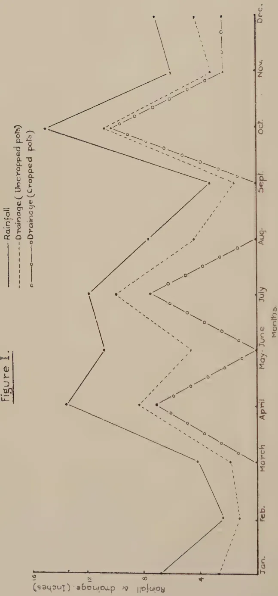
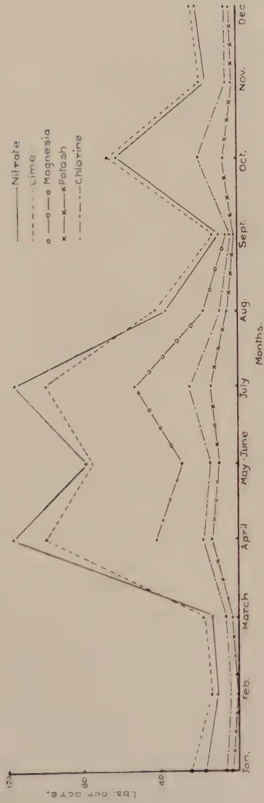

November 1929.
IN this issue of The Tropical Agriculturist is reprinted a paper describing the tapping results of different legitimate seedling crosses of Hevea. To both planters and research workers the paper is of great interest; it not only gives the first reliable evidence of the value of seedling crosses as planting material but also shows that the possibility of discovering very superior mother-trees among such crosses is large. The author, Dr. C. Heusser of the A.V.R.O.S. Proefstation, is to be congratulated on having made in his research a distinctly valuable contribution to the welfare of the plantation rubber industry and on having enhanced an already considerable reputation.
Dr. Heusser's paper gives the tapping results of 1450 seedlings comprising thirty different combinations of seventeen mother-trees. Briefly, it has been shown that these seedling crosses have yielded in the third tapping year more than twice as much as the control seedling plot and, it is estimated, more than 40 per cent. as much as average estate yields at the same period. That is based on the total yield of all crosses. Certain crosses have given much higher yields. All the crosses containing No. 157 either as the male or female parent have given high yields, a fact which implies that this tree or clone carries the factors which determine yield in a purer form than is usual. As Dr. Heusser states, the discovery of tree 157 is a valuable one and seed from one of the crosses containing 157 may be considered as planting material equal in value to the best bud-grafts.
258The highest-yielding seedling has been numbered 317 and was produced by the cross 165 × 161. In the third tapping year (that is, at eight years old) it yielded at the rate of 91.9 gm. per tapping. Another seedling yielded 86 gm. These and other seedlings will form new mother-trees to be used, among other purposes, for clonal reproduction. In considering yields of these crosses it must be remembered that the mother-trees used had not, at the time the crosses were made, been tested by test tapings of their bud-grafted progeny. They were unproved mother-trees and since then, apparently, none of them except tree 49 finds a place in the list of recommended A.V.R.O.S. clones. It can confidently be expected that the yields of crosses of proved mother-trees will be much more satisfactory.
This is not the place for further discussion of these results or of the statistical methods employed in comparing the different crosses. The lesson for Ceylon is obvious. We must not remain satisfied with the bud-grafted material now available or with merely testing the clonal progeny of our own mother-trees. Legitimate progeny of these trees must also be tested if the resources of science are to be fully utilised.
In this issue there is reprinted another paper by Dr. Heusser describing further test tapings of A.V.R.O.S. bud-grafts. The A.V.R.O.S. clones which have already been recommended to Ceylon planters by the Department of Agriculture, clones 49, 50, 71, 152, 163 and 256, have proved to be among the most satisfactory A.V.R.O.S. clones. New clones, however, have now been tapped, and it is possible that after further tapping results have been obtained some of these may supersede the older clones now being extensively planted.
259L. LORD,
ECONOMIC BOTANIST,
DEPARTMENT OF AGRICULTURE, CEYLON.
PART I of this paper* described the first permanent manurial experiments with rice laid down by the Division of Economic Botany and gave the results of the first season's work at Peradeniya and Labuduwa. The results of the Anuradhapura trials and of the residual effects of the manures at Peradeniya and Labuduwa have now been worked out and are given here. Again a warning must be issued against dogmatising on the results of a single season or of a single year.
Table I.ANURADHAPURA—MEDAKANNA 1929.
Series A.| Treatment per acre | Yield per acre based on mean of 5 plots of 1/100 ac. |
Yield expressed as a percentage of the control plot. |
Value of increased yield over control @ Rs. 2/50 per bus. |
Cost of the manures F.O.R. Colombo. |
|||
|---|---|---|---|---|---|---|---|
| lb. | bus. of 48 lb. | Rs. | cts. | Rs. | cts. | ||
| 1. Control: no manure | 3110 | 65 | 100.00 | — | — | — | — |
| 2. cwt. sulphate of ammonia (11.2 lb. N.) |
3305 | 69 | 106.27 | 10 | 00 | 4 | 37 |
| 3. As in 2 plus 1 cwt. superphosphate (20.2 lb. ) |
3250 | 68 | 104.50 | 7 | 50 | { 4 3 |
37 50 |
| 4. As in 3 plus cwt. muriate of potash (28 lb. ) |
3475 | 72 | 111.73 | 17 | 50 | { 4 3 3 |
37 50 43 |
| 5. 1 cwt. superphosphate (20.2 lb. ) |
3375 | 70 | 108.52 | 12 | 50 | 3 | 50 |
| 6. cwt. sulphate of ammonia plus 5 tons green manure |
3670 | 77 | 118.00 | 30 | 00 | { 4 — |
37 — |
Standard error of the difference between means=3.8%
.
* The Tropical Agriculturist, Vol. LXXIII, p. 67, August, 1929.
260Table II.
ANURADHAPURA—MEDAKANNA 1929.
| Treatment per acre | Yield per acre based on mean of 5 plots of 1/100 ac. lb. bus. of 48 lb. | Yield expressed as a percentage of the control plot. | Value of increased yield over control @ Rs. 2/50 per bus. | Cost of the manures F.O.R. Colombo. | |||
|---|---|---|---|---|---|---|---|
| Rs. | cts. | Rs. | cts. | ||||
| 1. Control: no manure | 3235 | 67 | 100.00 | — | — | — | |
| 2. 91 lb. steamed bone meal (2.73 lb. N+20 lb. ) | 3525 | 74 | 108.96 | 17 | 50 | 5 | 20 |
| 3. As in 2 plus 42.35 lb. sulphate of ammonia (11.2 lb. N+20 lb. ) | 3375 | 70 | 104.32 | 7 | 50 | 5 | 20 |
| 3 | 30 | ||||||
| 4. As in 2 plus 5 tons green manure | 3490 | 73 | 107.88 | 15 | 00 | 5 | 20 |
| — | — | ||||||
| 5. 1 cwt. superphosphate (20.2 lb. ) | 3800 | 79 | 117.46 | 30 | 00 | 3 | 50 |
| 6. As in 5 plus 5 tons green manure | 3535 | 74 | 109.27 | 17 | 50 | 3 | 50 |
| — | — | ||||||
Standard error of the difference between means = 5.4%.
.
Table III.
ANURADHAPURA—MEDAKANNA 1929.
| Treatment per acre | Yield per acre based on mean of 8 plots of 1/100 ac. lb. bus. of 48 lb. | Yield expressed as a percentage of the control plot. | Value of increased yield over control @ Rs. 2/50 per bus. | Cost of the manures F.O.R. Colombo. | |||
|---|---|---|---|---|---|---|---|
| Rs. | cts. | Rs. | cts. | ||||
| 1. 93 lb. ammophos (15 lb. N 18.6 lb. ) | 3356 | 70 | 103.81 | 15 | 00 | 9 | 55 |
| 2. 75 lb. sulphate of ammonia plus 104 lb. superphosphate. (15 lb. N 18.6 lb. ) | 3278 | 68 | 106.28 | 10 | 00 | 5 | 85 |
| 3 | 25 | ||||||
| 3. Control: no manure | 3089 | 64 | 100.00 | — | — | — | — |
Standard error of the difference between means = 1.9%.
The results of the Anuradhapura experiments will be found in tables I, II and III. The manures were tested during the meda season of 1929 and the paddy used was a four months vellai illankalyan from Paranthan known as Ankettel's paddy. It is thought that this paddy may have originated from a selection distributed many years ago from Anuradhapura and since lost sight of. This paddy is very satisfactory for maha or meda seasons in the Northern and North-Central Provinces. The value of the manures at Anuradhapura has been masked by the fact that they were applied to land which had perforce been uncropped for three seasons. The general high level of fertility
261may be seen from the yields of the control plots in the three series. These were respectively 65, 67, and 64 bushes or 3,110, 3,235 and 3,089 lb. per acre, which are yields higher than are normally obtained. The crop was broadcasted but the preliminary cultivation was thorough and there was an ample supply of irrigation water. The close agreement of the yields of the control plots in the three series is noticeable.
In spite of the high yields the manures have increased yields. On applying the test* it is found that, for the usually accepted probability of .05, series A and series C are sufficiently accurate to show that the larger differences in yield are significant, that is, sulphate of ammonia plus green manure in series A and both treatments in series C. In series B although some of the differences may be real the experiment is not accurate enough to permit conclusions to be drawn. The results are consistent with the first results at Peradeniya and Labuduwa. (The test has since been applied to those results and is satisfactory for all experiments except series A at Labuduwa.)
The residual effects of the manures were tested at Peradeniya and Labuduwa during the yala season of 1929. Compared with the preceding maha season the yields of all control plots have been considerably reduced. Yields are generally less during the yala season even when the same variety of paddy is grown. At Peradeniya the yala crop is on the ground for two months less than the maha crop. The low yields of the control plots exaggerate percentage increases. Results will be seen in tables IV to VIII.
Table IV.LABUDUWA—YALA 1929.Series A.Residual Effects.| Treatment per acre | Yield per acre based on mean of 6 plots of 1/100 ac. lb. |
Yield expressed as a percentage of the control plot. bus. of 48 lb. |
Value of increased yield over control @ Rs. 2/50 per bus. Rs. |
cts. | |
|---|---|---|---|---|---|
| 1. Control: no manure | 1516 | 31½ | 100.00 | — | — |
| 2. ½ cwt. sulphate of ammonia (11.2 lb. N) |
1503 | 31¼ | 99.16 | — | — |
| 3 As in 2 plus 1 cwt. superphosphate (20.2 lb. ) |
1622 | 34 | 107.01 | 6 | 25 |
| 4 As in 3 plus ½ cwt. muriate of potash (28 lb. ) |
1263 | 26¼ | 83.34 | — | — |
| 5 1 cwt. superphosphate (20.2 lb. ) |
1539 | 32 | 101.51 | 1 | 25 |
| 6. ½ cwt. sulphate of ammonia plus 5 tons green manure |
1546 | 32¼ | 101.96 | 1 | 87½ |
Standard error of the difference between means = 15.2%.
.
* See Fisher, R. A. Statistical Methods for Research Workers.
262Table V.
LABUDUWA—YALA 1929.
Series B.
Residual Effects.
| Treatment per acre | Yield per acre based on mean of 5 plots of 1/100 ac. lb. bus. of 48 lb. |
Yield expressed as a percentage of the control plot. |
Value of increased yield over control @ Rs. 2/50 per bus. Rs. cts. |
||
|---|---|---|---|---|---|
| 1. Control: no manure | 1028 | 22 | 100.00 | — | — |
| 2. 91 lb. steamed bone meal (2.73 lb. N+20.2 lb. ) |
1185 | 25 | 115.33 | 7 | 50 |
| 3. As in 2 plus 42.35 lb. sulphate of ammonia (11.22 lb. N+20.2 lb. ) |
1354 | 28 | 131.69 | 15 | 00 |
| 4. As in 2 plus 5 tons green manure |
1310 | 27 | 127.47 | 12 | 50 |
| 5. 1 cwt. superphosphate (20.2 lb. ) |
1151 | 24 | 112.00 | 5 | 00 |
| 6. As in 5 plus 5 tons green manure |
1434 | 30 | 139.52 | 20 | 00 |
Standard error of the difference between means = 9.0%.
Table VI.
LABUDUWA—YALA 1929.
Series C.
Residual Effects.
| Treatment per acre | Yield per acre based on mean of 4 plots of 1/100 ac. lb. bus. of 48 lb. |
Yield expressed as a percentage of the control plot. |
Value of increased yield over control @ Rs. 2/50 per bus. Rs. cts. |
||
|---|---|---|---|---|---|
| 1. 93 lb. ammophos (14.9 lb. N 18.6 lb. ) |
960 | 20 | 169.40 | 20 | 00 |
| 2. 75 lb. sulphate of ammonia plus 104 lb. superphosphate (15 lb. N 18.6 lb. ) |
812 | 17 | 143.17 | 12 | 50 |
| 3. Control: no manure | 567 | 12 | 100.00 | — | — |
Standard error of difference between means = 15.6%.
.
Table VII.
PERADENIYA—YALA 1929.
Series A.
Residual Effects.
| Treatment per acre | Yield per acre based on mean of 3 plots of 1/100 ac. lb. |
Yield expressed as a percentage of the control plot. |
Value of increased yield over control @ Rs. 2/50 per bus. Rs. cts. |
|
|---|---|---|---|---|
| 1. Control: no manure | 1193 | 24½ | 100.00 | — — |
| 2. ½ cwt. sulphate of ammonia (11.2 lb. N) |
1263 | 26½ | 105.87 | 3 75 |
| 3. As in 2 plus 1 cwt. superphosphate (20.2 lb. P2 O5) |
1487 | 31 | 124.58 | 15 62½ |
| 4. As in 3 plus ½ cwt. muriate of potash (28 lb. K2 O) |
1750 | 36½ | 146.65 | 29 37½ |
| 5. 1 cwt. superphosphate (20.2 lb. P2 O5) |
1543 | 32½ | 129.38 | 18 75 |
| 6. ½ cwt. sulphate of ammonia plus 5 tons green manure |
1707 | 35½ | 143.02 | 26 87½ |
| 7. 91 lb. steamed bone meal (2.73 lb. N + 20 lb. P2 O5) |
1417 | 29½ | 118.72 | 11 87½ |
| 8. As in 7 plus 5 tons green manure |
1730 | 36 | 144.97 | 28 12½ |
Standard error of the difference between means = 14.68%.
.
Table VIII.
PERADENIYA—YALA 1929.
Series C.
Residual Effects.
| Treatment per acre | Yield per acre based on mean of 2 plots of 1/100 ac. lb. |
Yield expressed as a percentage of the control plot. |
Value of increased yield over control @ Rs. 2/50 per bus. Rs. cts. |
|
|---|---|---|---|---|
| 1. 75 lb. sulphate of ammonia plus 1 cwt. superphosphate (15 lb. N + 20.2 lb. P2 O5) |
1480 | 30½ | 104.22 | 3 12½ |
| 2. 93 lb. ammophos (15 lb. N + 18.6 lb. P2 O5) |
1390 | 29 | 97.89 | — — |
| 3. Control | 1420 | 29½ | 100.00 | — — |
Standard error of the difference between means = 4.48%.
At Peradeniya both series fail to pass the test and, in spite of the large differences which have been obtained, the experiments furnish no reliable information. It is with just such data as are shown in table VII that the use of the test protects the experimenter from drawing conclusions that are unwarranted.
264At Labuduwa series A is again unreliable. Series B and C, however, are sufficiently accurate to show that the increases due to the residual effects of treatments containing (i) green manure (ii) ammophos and (iii) sulphate of ammonia plus superphosphate are real and not due to chance. Superphosphate alone gave the most economical increase in the first season at Labuduwa; its residual effect is small.
The consideration of further results of the permanent manurial experiments confirms the tentative conclusions of part I of this paper. The application of green manures can always be recommended. In addition these experiments have shown that a 100-lb. dressing of the 20/20 grade of ammophos or equivalent amounts of nitrogen and phosphoric acid in the form of sulphate of ammonia (75 lb.) and superphosphate (104 lb. of 18% super.) may be applied with definite profit. It is possible that the effect of continuous dressings of artificials without the addition of green material may have a deleterious effect in course of time. The experiments are designed to show this. To be on the safe side it is suggested that where possible and particularly where weed growth is slight the application of artificials should be accompanied by at least a small amount of green material.
My thanks are due to Messrs. G. V. Wickramasekera, K. D. S. S. Nanayakkara, K. M. B. Ranasinghe and V. Kanapathipillai for supervising field work and to Messrs. J. S. T. de Silva and W. N. Fernando for assistance in the statistical examination of results.
265A. W. R. JOACHIM, B.Sc., A.I.C.,
AGRICULTURAL CHEMIST,
DEPARTMENT OF AGRICULTURE, CEYLON.
At the Agricultural Conference in 1928 a paper* was read on the results of drainage and leaching trials at Peradeniya during 1927. These trials were continued without modification during 1928. The manures were applied on the 11th of January at the same rate as before. Previous to the application of the manures sieved soil was added to each pot to bring the soil in the pots to the same level. The drainage water from each pot was measured from time to time and an aliquot portion mixed with the previous samplings of the same pot for analysis at the end of every month. The methods of analysis were the same as those adopted in 1927.
Tables I and II below show the amounts of drainage from the pots during 1927 and 1928, and the percentages of drainage, evaporation and transpiration during these years.
Table I.
| Treatment. | Rainfall (inches). | Drainage (inches). | ||||
|---|---|---|---|---|---|---|
| ... | Uncropped. | Cropped. | ||||
| 1927 | 1928 | 1927 | 1928 | 1927 | 1928 | |
| 1. Blood meal. | 49.43 | 51.10 | 28.43 | 29.92 | ||
| 2. Nitrate of soda. | 48.27 | 50.80 | 26.58 | 25.94 | ||
| 3. Nitrate of potash. | 51.11 | 54.39 | 31.80 | 25.25 | ||
| 4. Sulphate of ammonia. | 76.6 | 89.02 | 48.78 | 51.20 | 30.97 | 34.20 |
| 5. Cynamide. | 49.48 | 49.82 | 30.77 | 26.61 | ||
| 6. Superphosphate. | 51.94 | 55.45 | 34.66 | 32.53 | ||
| 7. Muriate of potash. | 52.15 | 57.16 | 28.85 | 33.81 | ||
| 8. Sulphate of potash. | 50.48 | 48.81 | 30.24 | 34.68 | ||
| 9. Control. | 47.95 | 53.08 | 29.20 | 28.44 | ||
| Average. | 49.96 | 52.43 | 32.50 | 30.15 | ||
* The results of drainage and leaching trials at Peradeniya during 1927. A. W. R. Joachim. Trop. Agric. Vol. LXX. No. 5. May, 1928.
266Table II.| 1927 | 1928 | ||
|---|---|---|---|
| per cent. | per cent. | ||
| Average drainage | Uncropped | 65.1 | 58.9 |
| Cropped | 38.6 | 33.9 | |
| Average evaporation + absorption | Uncropped | 34.9 | 41.1 |
| Average evaporation + absorption + transpiration |
Cropped | 61.4 | 66.1 |
| Average transpiration | Cropped | 26.5 | 25.0 |
It will be noted that the average drainage from the uncropped pots in 1928 is 58.9 per cent. or a little less than three-fifths of the rainfall as against 65.1 per cent. or two-thirds of the rainfall in 1927. The lower drainage in 1928, notwithstanding the higher rainfall, is doubtless due to the settling down and the greater degree of compactness of the soil in the pots. In the course of the year the primary reason for the high drainage figures became apparent. It was observed that during periods of heavy rainfall, owing to the level of the soil being about three inches below the top of the pots, rain water which would otherwise have overflowed had collected in the pots and later drained through. As, however, it had been decided that no modification in these experiments were to be effected for at least two years, no measures were taken to obviate this defect. It is proposed however to effect the necessary amendments from January 1930. The drainage from the cropped pots was again much less than that from the uncropped pots, being 33.9 per cent. or about one-third the 1928 rainfall as against 38.6 per cent. or nearly two-fifths the 1927 rainfall.
The average percentage of evaporation from and absorption by the soil in the uncropped pots was 41.1 per cent. in 1928 as against 34.9 per cent. in 1927. Assuming equal absorption by and evaporation from both sets of pots, which is very unlikely, the percentage of transpiration from the uncropped pot is found to be in 1927 and 1928 26.5 and 25.0 per cent. respectively or about one-fourth the total rainfall each year.
Regarding the variation in drainage from individual pots, it will be noted from table I that in the case of the non-cropped pots the drainage from the muriate of potash and superphosphate pots is still highest, and that the sulphate of potash pot, but not the control as in 1927, has the lowest drainage percentage. It is significant that the soil in the sulphate of potash pot had sunk very appreciably pointing to a greater degree of compactness. In the case of the cropped pots the sulphate of potash and
This image is a scan of a blank page. The background is a uniform light beige or tan color. There are a few very small, dark specks scattered across the surface, which appear to be scanning artifacts or dust particles. No text, lines, or other graphical elements are present.Figure I.

This line graph illustrates the monthly rainfall and drainage for two types of fields: uncropped and cropped. The vertical axis represents rainfall and drainage in inches, ranging from 0 to 16. The horizontal axis represents the months of the year from January to December. The legend indicates three data series: Rainfall (solid line with solid dots), Drainage (Uncropped field) (dashed line with open circles), and Drainage (Cropped field) (solid line with open circles). The uncropped field shows higher drainage than the cropped field, particularly during the summer months. The rainfall peaks in July and August, while drainage is highest in the spring and autumn months.
| Month | Rainfall (inches) | Drainage (Uncropped field) (inches) | Drainage (Cropped field) (inches) |
|---|---|---|---|
| Jan. | 4.0 | 2.0 | 0.0 |
| Feb. | 6.0 | 3.0 | 0.0 |
| March | 10.0 | 4.0 | 1.0 |
| April | 12.0 | 6.0 | 2.0 |
| May | 10.0 | 5.0 | 2.0 |
| June | 8.0 | 4.0 | 2.0 |
| July | 12.0 | 6.0 | 2.0 |
| Aug. | 14.0 | 7.0 | 3.0 |
| Sept. | 10.0 | 6.0 | 3.0 |
| Oct. | 12.0 | 6.0 | 4.0 |
| Nov. | 10.0 | 5.0 | 4.0 |
| Dec. | 8.0 | 4.0 | 4.0 |
sulphate of ammonia pots showed the highest drainage percentages, and the nitrate of potash and nitrate of soda pots gave the lowest drainage percentages. The last-named pot had also the lowest drainage in 1927, and this is doubtless due to the good growth of the crop in this pot and in the nitrate of potash pot as well. For the same reason the drainage from the cyanamide cropped pot has also been low. The growth of the crop in the sulphate of ammonia pot has not been very successful probably owing to the effect of the continued application of this manure in increasing the acidity of the soil.
The data of table III will confirm what was found in 1927, viz., that there is a significant positive correlation between the average drainage from the uncropped pots during a period and the rainfall during the same period. This is also seen from figure I. The drainage was nil from the cropped pots during six months of the year; this was due to the comparatively low rainfall and its even distribution and to the large amounts of water transpired by the crop. The data also show that, as in 1927, when the rainfall is heavy and continuous, the amounts of drainage from the cropped pots approximate those from the uncropped pots.
Table III.
| Month. | Rainfall (inches). | Drainage (inches). | |
|---|---|---|---|
| Uncropped. | Cropped. | ||
| January | 6.82 | 2.58 | nil |
| February | 2.30 | 1.18 | 0.34 |
| March | 4.25 | 1.65 | nil |
| April | 13.72 | 8.38 | 7.18 |
| May | 2.60 | 1.18 | nil |
| June | 8.17 | 3.49 | nil |
| July | 12.01 | 9.92 | 7.74 |
| August | 7.55 | 4.38 | nil |
| September | 3.24 | 1.55 | nil |
| October | 15.17 | 10.68 | 10.33 |
| November | 6.09 | 3.28 | 2.21 |
| December | 7.10 | 4.34 | 2.35 |
| 89.02 | 52.43 | 30.15 | |
Analyses of the drainage waters were made for total solids, nitrate nitrogen, lime, potash, chlorine and, in a few instances, magnesia. These indicate that the greatest losses of fertilising
268constituents are in the following order: nitrate nitrogen, lime and, to gauge from the comparatively few analyses made, magnesia. The earlier samples were examined for ammoniacal nitrogen and phosphoric acid as well, but as the amounts of these constituents in the drainage waters were found to be inappreciable they were not sought for in later samples. The amounts of fertilising constituents in the drainage waters from the uncropped pots are much greater than those from the cropped pots, and, in the case of the former, there is almost a direct proportionality between the quantities of fertilising constituents in the drainage waters and the amounts of the latter and of the rainfall. In other words, the greater the rainfall, the greater are the drainage and the total amount of fertilising constituents contained in it. This is clearly seen from figures I and II. There is no relationship between the amounts of drainage and the concentrations of the fertilising constituents in them.
Table IV below shows the amounts of fertilising constituents in pounds lost in the drainage waters from an acre of soil.
Table IV.Composition of Drainage Waters.p.p.m. = average parts per million.
(U) = uncropped. (C) = cropped.
Total Solids.| Treatment | Lbs. per acre | p.p.m. | Ratio (U./C). | |||
|---|---|---|---|---|---|---|
| 1927 | 1928 | 1927 | 1928 | 1927 | 1928 | |
| Control | (U) 3906 | 3139 | 323 | 261 | 2.1 | 6.8 |
| " | (C) 1854 | 458 | 280 | 71 | ||
| Treatment. | Lbs. per acre. | p.p.m. | Ratio (U./C). | |||
|---|---|---|---|---|---|---|
| 1927 | 1928 | 1927 | 1928 | 1927 | 1928 | |
| Blood meal. | (U) 505.0 | 465.2 | 45.1 | 40.2 | 3.2 | 29.6 |
| " " | (C) 159.8 | 15.7 | 24.8 | 2.3 | ||
| Nitrate of soda. | (U) 481.9 | 520.9 | 44.1 | 45.5 | 3.8 | 59.4 |
| " " " | (C) 124.1 | 8.8 | 20.6 | 1.6 | ||
| Nitrate of potash. | (U) 509.8 | 538.4 | 44.0 | 43.7 | 3.3 | 48.8 |
| " " " | (C) 153.1 | 11.0 | 21.3 | 1.9 | ||
| Sulphate of ammonia | (U) 509.0 | 478.9 | 46.1 | 41.4 | 3.5 | 33.2 |
| " " " | (C) 145.6 | 14.4 | 20.8 | 1.9 | ||
| Cyanamide. | (U) 547.3 | 490.5 | 48.8 | 43.5 | 3.4 | 40.5 |
| " | (C) 180.7 | 12.1 | 25.9 | 2.0 | ||
| Control. | (U) 510.5 | 520.1 | 47.0 | 43.2 | 2.9 | 47.7 |
| " | (C) 175.9 | 10.9 | 26.6 | 1.7 | ||
| Average. | (U) 510.6 | 502.5 | 45.8 | 42.9 | 3.4 | 41.2 |
| " | (C) 156.5 | 12.2 | 23.3 | 1.9 | ||
Figure 2.
Untrapped pots.

The graph displays the monthly variation of five chemical components in untrapped pots. The Y-axis represents the concentration in Lbs. per acre, ranging from 0 to 120. The X-axis represents the months of the year, from January to December. The components are Nitrate (solid line), Lime (dashed line), Magnesia (line with open circles), Potash (line with crosses), and Chlorine (line with dots). Nitrate and Lime show a significant peak in July and August, reaching approximately 100 Lbs. per acre. Magnesia and Potash also show a peak in July and August, reaching approximately 80 Lbs. per acre. Chlorine shows a peak in July and August, reaching approximately 60 Lbs. per acre. The data points for each component are as follows:
| Month | Nitrate | Lime | Magnesia | Potash | Chlorine |
|---|---|---|---|---|---|
| Jan. | 0 | 0 | 0 | 0 | 0 |
| Feb. | 0 | 0 | 0 | 0 | 0 |
| March | 0 | 0 | 0 | 0 | 0 |
| April | 0 | 0 | 0 | 0 | 0 |
| May-June | 0 | 0 | 0 | 0 | 0 |
| July | 100 | 100 | 80 | 80 | 60 |
| Aug. | 100 | 100 | 80 | 80 | 60 |
| Sept. | 0 | 0 | 0 | 0 | 0 |
| Oct. | 0 | 0 | 0 | 0 | 0 |
| Nov. | 0 | 0 | 0 | 0 | 0 |
| Dec. | 0 | 0 | 0 | 0 | 0 |
| Sulphate of ammonia. | (U) | 553.1 | 474.3 | 50.0 | 41.0 | 2.7 | 12.9 |
| " " " | (C) | 203.9 | 39.9 | 29.1 | 5.2 | ||
| Muriate of potash. | (U) | 628.6 | 498.3 | 53.2 | 38.5 | 3.2 | 10.3 |
| " " " | (C) | 195.0 | 48.3 | 29.8 | 6.3 | ||
| Control. " " | (U) | 589.4 | 480.0 | 54.3 | 39.9 | 2.1 | 11.4 |
| " " | (C) | 274.9 | 41.9 | 41.6 | 6.5 |
| Average. | (U) | 590.4 | 484.2 | 52.5 | 39.8 | 2.7 | 11.2 |
| " | (C) | 224.6 | 43.4 | 33.5 | 6.0 |
| Nitrate of potash. | (U) | 60.4 | 60.9 | 5.2 | 4.9 | 1.5 | 11.2 |
| " " " | (C) | 39.4 | 5.5 | 5.5 | 1.0 | ||
| Muriate of potash. | (U) | 69.9 | 64.6 | 5.9 | 5.0 | 2.3 | 10.0 |
| " " " | (C) | 30.6 | 6.5 | 4.7 | 0.8 | ||
| Sulphate of potash. | (U) | 75.9 | 57.8 | 6.6 | 5.2 | 2.4 | 8.5 |
| " " " | (C) | 32.0 | 6.8 | 4.7 | 0.9 | ||
| Control. " " | (U) | 65.7 | 74.0 | 6.1 | 6.2 | 1.4 | 13.6 |
| " " | (C) | 46.0 | 5.4 | 7.0 | 0.8 |
| Average. | (U) | 68.0 | 64.3 | 5.5 | 5.3 | 1.9 | 10.7 |
| " | (C) | 37.0 | 6.0 | 6.0 | 0.9 |
| Muriate of potash. | (U) | 161.5 | 148.0 | 13.1 | 11.4 | 2.4 | 2.6 |
| " " " | (C) | 68.2 | 56.3 | 9.8 | 7.4 | ||
| Control. " " | (U) | 115.2 | 88.3 | 10.2 | 7.3 | 1.8 | 3.4 |
| " " | (C) | 65.6 | 25.8 | 9.3 | 4.0 |
| Average. | (U) | 138.4 | 118.1 | 11.7 | 9.3 | 2.1 | 2.8 |
| " | (C) | 66.9 | 42.1 | 9.6 | 5.7 |
| Average per sampling. | Lb. per acre. Total (calculated). | Ratio. | ||
|---|---|---|---|---|
| Sulphate of ammonia. | (U) | 26.4 | 290 | |
| " " " | (C) | — | — | |
| Muriate of potash. | (U) | 26.7 | 294 | |
| " " " | (C) | 30.0 | 330 | |
| Control. " " | (U) | 30.0 | 330 | |
| " " | (C) | 25.0 | 275 | |
| Average. | (U) | 27.7 | 304 | 1 |
| " | (C) | 27.5 | 302 |
An examination of the data of this table will lead to the following conclusions:
Total Solids: The loss of total solids in the drainage water from the cropped control pot during 1928 was much less than that during 1927. The uncropped pots lost nearly seven times as much as the cropped pots.
Nitrate Nitrogen: (1) Nitrates continue to be found in the drainage waters in largest quantities. The 1928 average, in spite of a heavier rainfall during the year, is slightly lower than that of the 1927 average for the uncropped pots; but the losses from the cropped pots were only about one-fortieth those from the uncropped pots. The losses from the cropped pots in 1928 were over ten times less than the losses from these pots during 1927. The reason for the continued large losses of nitrate
270nitrogen from the uncropped pots is the one referred to already, viz., the slow drainage of water collected in the pots above the soil during periods of heavy rainfall. The greater part of this water would flow over under normal field conditions. (2) The losses of nitrogen added in the form of manures to the pots are still inappreciable when compared to the soil nitrogen losses. (3) Of the cropped pots, the smallest loss is from the nitrate of soda pot, but the losses from all the cropped pots are very small. Of the uncropped pots, the nitrate of potash and soda pots show the largest losses and blood meal the smallest. The loss of nitrate from the cyanamide uncropped pot during 1928 was much smaller than that from the same pot in 1927.
Lime: (1) The amounts of lime found in the drainage waters from the uncropped pots are still very high but smaller than those found in 1927. (2) The losses from the cropped pots are much less than the losses from the same pots during 1927. The average amount of lime lost during 1928 from the uncropped pots was over eleven times that from the cropped pots. (3) The greatest amounts of lime are lost from the muriate of potash pots, both cropped and uncropped.
Potash: (1) The average amount of potash lost from the uncropped pots during 1928 is similar to that lost in 1927. (2) The losses from the cropped pots during 1928 are much smaller than the losses during 1927. About five times more potash appears to have been taken up by the crop during 1928 than during 1927.
Chlorine: (1) The losses of chlorine in the drainage waters are smaller during 1928 than during 1927 in the case of both cropped and uncropped pots. (2) The average amount of chlorine lost from the uncropped pots is about three times greater than that from the cropped pots. (3) Chlorine does not appear to be required in large quantities by the Hibiscus crop.
Magnesia: During the course of the analyses of the drainage waters in 1928, it was observed that the amounts of lime and potash in the drainage waters were not chemically equivalent to the amounts of nitrate found in them and an examination of a few samples of the drainage waters for magnesia was made in order to determine whether nitrate was found combined with this base to any extent. The analyses appear to indicate that magnesium is lost from the soil as nitrate in fairly large quantities.
The results of leaching trials started in 1927 and continued during 1928 generally confirm the conclusions obtained from the 1927 data, especially with regard to the relationship between drainage and rainfall, the amounts of fertilising constituents in
271the drainage waters and the quantities of the latter, and the presence of large amounts of nitrate, nitrogen and lime in the drainage waters from the uncropped pots. The losses of fertilising constituents from the cropped pots during 1928 are much smaller than those from the uncropped pots or the 1927 cropped pots. This would seem to indicate that, notwithstanding a heavy rainfall, the losses of even the most soluble fertilisers through drainage from Ceylon soils would be very small provided a good crop covers the soil. On the other hand, these results appear to indicate that considerable losses of soluble fertilising constituents may occur from our soils, even though uncultivated, if they are left bare. These experiments show further that of the plant fertilising constituents the greatest losses are of nitrate, nitrogen followed by lime, magnesia, chlorine and potash in decreasing order. No phosphoric acid and only inappreciable quantities of nitrogen as ammonia appear to be lost in the drainage waters of Ceylon soils.
It is my pleasant duty to acknowledge my indebtedness to my two assistants Messrs. Kandiah and Pandittesekere for having assisted in carrying out the numerous analytical determinations and in the calculation of the results, and to Mr. George L. de Silva for having prepared the diagrams for the press.
272CHEMICAL NOTES (7).THE MANURIAL VALUE ANDA. W. R. JOACHIM, B.Sc., A.I.C.,
AGRICULTURAL CHEMIST,
DEPARTMENT OF AGRICULTURE, CEYLON.
A number of queries has recently been received by the Chemical Division of the Department on the manurial and agricultural value of coconut fibre dust. Analyses of two samples of coir dust obtained through the courtesy of the British Ceylon Corporation Ltd., were therefore made by Mr. D. G. Pandittesekere, Assistant in Agricultural Chemistry. The ash constituents and nitrogen were determined by ordinary analytical methods, pentosans by Krober and Tollen's method and lignin by the method recommended by Waksman (1). The results of analysis are shown in table I below.
Table I.| Fine coir dust. | Coarse coir dust. | Sample of coconut husk. on material at 100°C. % |
|||
|---|---|---|---|---|---|
| on air-dry material. % |
on material at 100°C. % |
on air-dry material. % |
on material at 100°C. % |
||
| Moisture | 15.77 | — | 20.39 | — | — |
| *Organic matter | 73.19 | 86.87 | 76.77 | 96.43 | 96.5 |
| + Ash | 11.04 | 13.13 | 2.84 | 3.57 | 3.5 |
| 100.00 | 100.00 | 100.00 | 100.00 | 100.00 | |
| + Containing sand | 7.82 | 9.29 | .69 | .87 | .36 |
| " phosphoric acid |
.06 | .07 | .04 | .06 | .08 |
| " lime | .67 | .79 | .69 | .87 | .94 |
| *Containing nitrogen | .84 | 1.00 | .31 | .39 | .26 |
| " potash | .33 | .39 | .26 | .33 | .31 |
| Lignin | 31.76 | 37.71 | 34.75 | 43.65 | 45.45 |
| Pentosan | 10.10 | 11.95 | 10.74 | 13.10 | 19.15 |
| Ratio of pentosan to lignin |
.32 | .30 | .42 | ||
It will be noted that the sample of fine coir dust has a much higher ash and lime content than the coarse sample. This is due to the presence of limestone and sand particles in the former. In other respects the analytical composition of the two grades of coir dust is similar. The actual manurial value of coir dust is small, the present samples containing only .3 per cent. nitrogen, .4 per cent. lime and .05 per cent. phosphoric acid. These samples, however, are comparatively rich in potash which they contain to the extent of .9 per cent. The analysis of a sample of coconut husk is shown for comparison. The potash content of this particular sample of husk is unusually low, the average potash content of coconut husk being about 1.5 per cent.
273From the point of view of decomposability, as measured by the pentosan lignin ratio, the data indicate that coir dust will decompose in the soil only very slowly as its pentosan/lignin ratio is less than .5, which ratio Rege (2) has shown is the minimum required for the slow decomposition of organic materials in soil. That required for rapid decomposition is greater than unity. Compared with that of fibre dust the pentosan/lignin ratio of coconut husk is slightly higher, viz., .42, but is still so low that this material will also be only very slowly decomposed in the soil, unless the decomposition is accelerated by other means. Experiments on the conversion of coconut husk and coir dust into artificial manure by an extension of the Adco process have recently been initiated on a few coconut estates. In this process the pentosan lignin ratio of the raw material is brought up to the standard required by the addition of easily-decomposable, high pentosan-containing green materials, e.g., grass or green-manure leafy material.
Coir dust absorbs over eight times its weight of water and parts with it comparatively slowly. This is seen from table II below which shows the maximum water-absorbing capacity of and rate of loss of moisture from moisture-saturated samples of coir dust, loamy soil, sandy soil, sandy soil mixed with 2 per cent. of its weight of coir dust, and sandy soil with a surface mulch of coir dust respectively.
Table II.| Maximum water-holding capacity. Initial moisture. Per cent. |
Per cent. moisture at end of | ||||||
|---|---|---|---|---|---|---|---|
| 1st day | 2nd day | 3rd day | 4th day | 5th day | 7th day | ||
| Loamy soil. | 41.8 | 25.3 | 12.6 | 4.4 | 2.9 | 2.9 | — |
| Sandy soil. | 24.3 | 11.9 | 2.5 | 0.3 | — | — | — |
| Sandy soil + coir dust (incorporated). |
33.2 | 19.0 | 10.0 | 1.6 | 0.1 | — | — |
| Sandy soil + coir dust (as surface mulch). |
24.3 | 12.6 | 3.4 | 1.5 | 0.7 | 0.2 | — |
| Coir dust. | 823 | 655 | 514 | 348 | 178 | 79 | 17 |
It will be observed that by the incorporation of 2 per cent. by weight of coir dust with the sandy soil the maximum water-holding capacity of the latter is increased by nearly 40 per cent. and the rate of loss of moisture is slower than from the soil itself. Coir dust can therefore be advantageously incorporated into sandy soils along with green and artificial manures. Coir dust can also be used as a surface mulch for light soils in dry districts during periods of drought, but it should be applied in thick layers if the rate of loss of soil moisture is to be appreciably reduced. Coir dust is also useful for improving the physical condition of heavy clay soils.
REFERENCES.IN this communication are assembled the results of the continued tapping of the experiment recently reported and of new experimental tappings of the Hevea buddings. It contains the yield statistics of:—
In the attached table† are shown the results of the continued experimental tappings of clones 33, 36, 49, 50, 52 and 80 over a period of 14 months. They are a continuation of our Communications Nos. 40, 44, 55, and 59.‡ The clones 139 and 142 have been newly incorporated in the above. The annual averages in these tables have no further connection with the previous tapping years April-February and May-March respectively, but are calculated over the calendar year. This change was made in the interests of greater uniformity in the tapping experiments. Seeing that on the East Coast planting of buddings is mostly carried out in October-December, the calendar years practically coincide with the years of age of the buddings.
Clones 33, 50, 52, 80, 139 and 142 were still tapped on the old panel, but a new panel was opened at a height of 1.20 metres on clones 49 and 36 in October, 1927. With the exception of the foregoing, the tapping system for all the clones remained the same, viz., a single left-hand cut at an angle of 30° over one-third of the circumference, alternate monthly tapping with a bark consumption of 45 mm per tapping month. To calculate the annual yields the average yield per tapping should be multiplied by 150 tapping days.
* By Dr. C. Heusser in Archief voor de Rubbercultuur, 13e Jaargang No. 9, September, 1929.
† Tables not reproduced.
‡ Archief voor de Rubbercultuur; VIII No. 1 (1924), IX No. 8 (1925), XI No. 5 (1927) and XII No. 1 (1928).
275Since tapping began on the one-third cut, clone 33 as well as all the other clones, has remained free from brown bast. In clone 36 the oldest buddings again gave no further trouble this year from wind damage. Bark renewal, with the exception of the rejected clone 52, was satisfactory, and was very good in the case of clones 50, 80 and 36. The growth of the buddings is very good with the exception of clone 33. The latter appeared backward in girth increase and leafed very quickly.
With regard to the yields, the following is to be observed:—
The falling-off of yield due to wintering was in general very great in 1928. As a result of this clone 33 only showed an increased yield of 2 g. In spite of the high tapping cut, clone 36 showed an increase of 8.2 g. in yield and is at present the best of the clones standing in the seed gardens. Budding No. 7 gave an average of 100.6 g. in October 1928, and on October 10th reached 147 g., being the highest day's production obtained. It is to be regretted that this clone in its early stages is so susceptible to wind damage. Clone 49 showed a decrease of 1.3 g. in 1928, compared with 1927. This is thought to be due to climatic factors. The increase in yield of clone 50 was only 1.6 g. It must be admitted that a bigger increase than this was expected, but it is believed that a bigger increase can be counted on next year. In July, clone 50 flowered and bore fruit for the second time, so that during the past year, 18,350 viable seeds were harvested from the 10 buddings. It is not beyond the realms of possibility that this had a detrimental effect on the production.
The yield of clone 52 increased considerably. Although the figures show that on primary bark reasonable yields may be obtained, the unsightly bark renewal makes that this clone will not be able to compete with better ones.
Clone 80 has made good progress, but owing to the loss of half of this seed garden in 1927 through a whirlwind, the reliability of the average is diminished.
The yields of clones 139 and 142 are not such that they can be put on a par with the A.V.R.O.S.-clones at present in use.
As however the tapping results of the seedlings of these two clones have been discussed in our Communication No. 70, it has been considered advisable to publish the yields of the buddings here.
The experimental tappings of buddings and seedlings reported upon in our Rubber Series Communications 54 and 59,* were continued, thanks to the kind co-operation of the manager and staff of the estate.
The latex from the clones and the seedlings of selected trees was again weighed separately each day on the estate. On the 8th, 15th, 22nd and 30th of each tapping month measurements of the rubber content were taken and from these measurements the yields per tree per tapping were calculated. The seedlings from 36 x 35 and the illegitimate seedlings of 49 were again measured as before by the usual method, namely, coagulating in the cup, crepeing, drying and weighing the monthly yields.
Tapping was carried out alternate monthly, with a left-hand cut at an angle of 30°. In the case of the buddings a new panel was opened during the year at a height of 1.20 metres, and the length of the tapping cut was reduced from to of the circumference. This transition was not made simultaneously for all the trees, for the majority it was carried out during the second tapping period, and for the remainder during the 6th tapping period.
* Archief voor de Rubbercultuur, X No. 12 (1926) and XII No. 1 (1928).
276The seedlings are still being tapped for the most part on the old panel over the circumference. The consumption of bark was normal ( mm).
Growing conditions have been considerably improved during the past year by digging drains. Bark renewal is good for all the clones, and the yields of buddings have very satisfactorily improved. Clone 49 still remains the best yielder, with a yield of 258% of that of the seedlings from selected seed. Cross attained the highest yield per tree, being 4 times that of the seedlings from selected seed. As however the number of seedlings trees is small and the experimental tappings with the same crosses on Soengei Pantjoer show less favourable results, the above must be accepted with a certain reserve. This however does not detract from the fact that amongst the trees of this cross () there are valuable new clones for isolation. The three-year's old buddings of the very promising numbers will prove this after a few years. Tree No. 25 of gave a yield of 13.7 kg. in 1928, and tree No. 18, 12.92 kg. The illegitimate seedlings of 49 have jumped up 15.2 g. These seedlings were all tapped on the foot of the tree.
We are indebted to Mr. H. J. V. S. Holder, Manager of Boekit Maradja Estate, for the extensive yields measurements, from which the average tapping results have been calculated and compiled in the accompanying table.* In conjunction with his Staff he has continued admirably the experimental tapping described in detail in our Communication No. 58.†
The continuation of the experiment covers a period of years (July 1927-December 1928). To the clones tapped from the commencement, viz., Nos. 51, 65, 71, 76, 80, 152 and 163, and the control seedlings, five new clones of the same age were added in November 1927, January 1928 and March 1928, namely No. 33, 49, 53, 147 and 182. The former clones were continued for half a year on the same panel (on half the circumference) and thereafter on a new panel over one-third of the circumference and 80 cm. above the junction. For the control seedlings the new tapping panel was also set out over one-third of the circumference, but the change was made one tapping period later and the height tapping was only cm. The new buddings added to the experiment were tapped over half the circumference at a height of 50 cm.
With regard to the number of trees of each group that were tapped, the following is to be noted: The experiment was commenced with 200 trees which were tapped alternate months in two series of 100 trees, series A being tapped in the odd months, and Series B in the even months. When it appeared after tapping for years that the yields from both series were practically the same, the experiment was continued from the beginning of 1928 with Series A only, the trees from Series B being reserved for other experiments. The group of control seedlings was however increased from 100 to 200 trees. As the result of wind damage the number of trees of clones 163 and 80 was reduced from 100 to 50. With the newly-added clones, the numbers of buddings had to be limited as follows: Clone 174 20, Clones 33 and 49 25, Clone 182 50.
The first three columns of the table show the annual averages per tree per tapping for 1926, 1927 and 1928 (i.e., the 4th, 5th and 6th years of age.) In the last column the annual yield per tree in kilograms dry rubber for 1928 is given. The table also shows the monthly averages obtained during the 9 tapping periods of the continued experimental tapping.
* Table not reproduced.
† Archief voor de Rubbercultuur, XII No. 1 (1928).
277The new yield statistics of Boekit Maradja give rise to the following provisional remarks: Amongst the clones already tapped Nos. 152, 71 and 163 appear again to be the most striking. The yield per 200 trees (i.e., per hectare) in the 6th year of age would be 750 kg. for 152, 694 kg. for 71 and 662 kg. for 163. Clones 51 and 76 remain less valuable. Clone 80 has not fulfilled expectations and although its production is 1 2,3rds that of the seedlings, upon the introduction of new clones, this clone has to be put in one of the last places in the list of the usual A.V.R.O.S.-clones. Amongst the new clones tapped, 49 stands out. With this clone it is very noticeable how these trees which were first tapped at the age of five years, commence with a high production, and have hardly reacted to the rather heavy wintering of 1928. With clones 49 a yield of 792 kg. per 200 trees can be reckoned. The yields of 53, 147, 182 and 33 are also considerable. Clone 53 is one of the clones previously misjudged owing to the first yield measurements, of which the yield, now that we have other more promising clones, does not in the first place draw attention. Clone 33 possesses without doubt high-yielding capacities, but even on the good soils of Boekit Maradja still remains a sparsely growing tree.
With all these clones bark renewal was satisfactory. Statistics concerning bark renewal, latex concentration, etc. Will be published in the next Communication on these experimental tappings, in comparison with the control seedlings. The oldest renewed bark will be then 3½ years old.
Clone 256 was discovered during an examination of a budded plantation on Tanah Terbang. In the report on this examination* this clone appeared as No. IV, resp. T.T.I. To prevent any confusion it was mutually agreed later to give this clone the number A.V.R.O.S. 256.
The buddings were planted out in October 1920, and originated from a mother-tree on Tanah Terbang which up to the present has not been traced. The first production measurements were taken in 1925 and 1926. In 1927 these measurements could not be continued owing to certain circumstances. For the purpose of selective thinning, however, the usual latex measurements were carried out this year. The buddings belong to the class producing over 100 cm.
We are in possession of complete lists of the yields in dry rubber since January, 1928, for which we are indebted to the painstaking co-operation of Mr. Rusterholz, Manager of Tamiang Rubber Estates. The trees were tapped alternate months with a left-hand cut over half the circumference. The average height of the tapping cut in 1928 was 60 cm. above the union.
The measurements were first of all made for 8 buddings. By means of the seeds a further 12 buddings in October 1928 were identified as belonging to 256 and included in the experiment. The yields were determined for each individual tree by daily coagulation in the cups, individual collection and hanging up of the coagula on separate wires for each tree. At the end of a tapping period, the monthly yields were hung for 14 days in the smokehouse and when completely dry were weighed at the experimental station and the daily averages calculated. The average daily yields over 1928 (the 8th year of age of the buddings) are assembled in the accompanying table.† The number of tapping days was 161, and the average annual yield per tree works out at 6.71 kg.
* Archief voor de Rubbercultuur 1926, p. 199.
† Tables not reproduced.
278The buddings of 256 are almost ideal trees as far as their outward appearance is concerned. They are good growing trees with a straight trunk and smooth thick bark, and show excellent bark renewal; branching is rather regular and strong, and the crown is not too broad.
The buddings of the clones mentioned below were planted out in 1922 and 1923, partly in rows simultaneously (Nos. 214, 212, 209, 208, 207, 188, 222, 2nd series) and partly at different times as supplies between the seedlings planted in 1921 (1st series). The development of the buddings of the latter series was therefore irregular. In order to obtain yield statistics which can be compared with each other to a certain extent, the buddings of this last series were taken into tappings when they had a girth of 40 cm. at a height of 1 metre, and for calculating the annual averages, the 6 first tapping periods have been taken as the first tapping year, and the 7th to 12th periods as the 2nd tapping year.
In the first experimental series a number of partly known clones which really were not intended for clone section, were included in addition to the new clones (181, 182, 183, 184, 185, 186, 187, 188, and 189). These buddings, sometimes represented by only a few specimens, are authentic buddings of the mother-trees, which in 1920 were mostly used for crossing. After hesitation, these clones (Nos. 26, 33, 36, 49, 138, 139, 140, 141, 142, 145, 151, 152, 157, 161, 164, 165, 166) were added here as it was felt that approximate figures are better than none at all.
The clones planted out in rows all at the same time were brought into tapping simultaneously (December 1927). The yields of 10 trees from each clone were measured together. Only 2 buddings of clone 222 were present.
All buddings were tapped on the first panel at a height of 50 cm. above the union, with a left-hand cut over half the circumference. The second panel was set out over one-third, and at a height of 1 metre. The bark consumption was limited to 45 mm. per tapping month as usual, and tapping was carried out alternate monthly.
From the resultant yields, the following observations can be made:—
1. Clones 185, 183, 214, 209, 222, 186 gave a higher production than the old clones at present in use. Further yield figures will have to be awaited before a definite valuation of these clones will be possible.
Clone 185 stands out particularly by its high production, as a yield of 34 g. during the second year of tapping has never before been reached by any A.V.R.O.S. clone. The pity is that this clone forms crooked stems with continuous grooves.
2. Clones 188, 166, 207, 208 belong to the very promising numbers.
3. The remaining clones experimentally tapped have in our opinion little chance of giving better yields than those at present in use.
1. Clone 49, 50, 71, 152, 163 and 256 are, as regards yield and period over which observations were made, foremost in the list of A.V.R.O.S.-clones.
2. The great sensibility of clone 36 for wind damage forms a serious drawback.
3. The yield figures of clones 183, 185, 186, 209 and 214 justify full interest and accurate further observations.
4. The yields of clones 27, 35 and 53 show that they differ only little in order of yield from the clones mentioned sub 1.
5. Clones 80 and 33 have not fulfilled expectations.
279THE tapping experiments on Tjinta Radja† and Boekit Maradja‡ have shown that the yield of buddings of certain clones during the first years of tapping is much higher than that of the seedlings from mixed seeds of ordinary mother-trees. From the above experiments however it must not yet be concluded that each group of seedlings will give a lower yield than buddings. The possibility exists that under favourable combinations (crosses or self-pollinations) with certain mother-trees, seedlings can be obtained that on an average will give just as good results as the best clones. If this does not appear possible with the first generation of seedlings it can be obtained with following generations. The importance of seed selection with Hevea trees must not be under-estimated and in this connection we consider it desirable to publish the yields of the first three tapping years of the seedlings obtained by us by artificial pollination, and also to report upon the general behaviour of the various families.
The experimental material.—With two exceptions the crosses were made between March and May 1920 and were fully described in our Mededeeling No. 27.§ The resulting seeds were harvested in August-October 1920 and planted out in nurseries at the experimental station. In October 1921-January 1922 the seedlings, approximately one year old, were planted out as stumps in the experimental garden of Soengei Pantjoer, after the majority had been marketed. The crosses 36 × 35 and 36 × 139 date from 1919. First of all they were planted out in an isolated garden but after being repeatedly damaged by deer and finally by a lalang fire, it was decided in 1922 to transplant them to the newly-opened experimental garden on Soengei Pantjoer. Although they recovered very well they may be considered as being of the same age as the remaining crosses. A total of 1691 stumps were planted out belonging to 30 different combinations between 17 different mother-trees. The number of trees per cross varies considerably and some groups are only represented by a few individual trees. This is due to the low percentage of successes in pollination and the barrenness of the trees.
Of the trees originally planted, 1450 were still in existence at the end of the third tapping year. The loss of more than 15% occurred in the first year, partly on account of unsuccessful plants (no selection took place in the nurseries) and partly on account of root diseases. On a block where previously a dijohor jungle (Cassia Siamea) had grown the loss of plants due to root disease amounted to 40%. The following numbers of tappable trees were present:—
At the end of the 5th year (1st tapping year) 1241 (85% of the total trees).
At the end of the 6th year (2nd tapping year) 1345 (93%).
At the end of the 7th year (3rd tapping year) 1393 (96%).
* By Dr. C. Heusser in Archief voor de Rubbercultuur, 13e Jaargang No. 9, September, 1929.
† Archief voor de Rubbercultuur 1926 p.630 and 1928 p.57.
‡ Archief voor de Rubbercultuur 1928 p.25.
§ Archief voor de Rubbercultuur 1921 p.11.
280The plantation.—The ground on which the trees were planted (8 2/3 ha) is situated on the edge of a plateau along the river Soengei Merah. It is slightly undulating and consists uniformly of coarse sandy red soil with a clay liparite subsoil. According to verbal reports the land was last planted with tobacco about 20 years previously. When taken over it was for the greater part grown over with lalang. Every one to two years the lalang was burnt down so that the top soil was not in the best condition. The rainfall on Soengei Pantjoer amounts to 1900-2000 mm. per annum.
Planting and upkeep.—Before planting the ground was chankolled three times, and afterwards the rows between the trees were planted with Mimosa invisa. The rows of trees were kept clean to a width of two metres. During the second and third years the entire plantation was provided with catch-pits and on the bunds Vigna was planted and later on Centrosema pubescens between the Mimosa strips. A clean ring was however always kept around the trees. Too much attention was not paid to the removal of harmless weeds, but particular care was taken to see that the garden remained free from lalang. By this method upkeep costs could be maintained at a low level even compared with those occurring in actual practice. The beneficial effect of the Mimosa on the top soil must be given here special mention. It broke up the soil and gave rise to a considerable amount of humus. It is thought that the average good yields are partly due to the Mimosa.
With a view to ease of control the trees from one cross were planted together in rows of 14 trees. To make individual comparisons of the families it would have been better to plant the crosses in alternate rows; but for comparisons between individuals of the same family block planting is preferable. Figure 1* shows the position of the crosses in the plantation.
The planting distance is 7m. × 7m. square. This wide distance was chosen to allow observation of the unhindered development of the trees as well as their yields.
Tapping.—Tapping was commenced in November 1925, 4 years after planting out the stumps or five years after harvesting the seeds. The trees were considered tappable when they had a circumference of 40 cm. or over, at a height of 1 m. Those trees that were undersized at the commencement of tapping were added to the experiment after they had attained a circumference of 40 cm. By this addition the calculation of the averages of the slow-growing crosses was adversely affected, but from a practical point of view it is fairer that this unfavourable character should reduce the average production rather than that a comparison should be made between the best-developed trees of each cross. The tapping system consisted of a one-third left-handed cut at an angle of 30°, alternate month tapping. By tapping every alternate row—on the even months the odd rows, and on the odd months the even rows—approximately the same number of trees were tapped from each cross every month. No tapping was done on Sundays, and the number of tappings was therefore reduced to 150-155 tapping days or of the usual number of tappings with the system of daily tapping. The consumption of bark was limited to 45 mm. (1 3/4") per tapping period, and practically amounted to 25 cm. per tapping year.
The first tapping panel for the first two tapping years was set at 50 cm. above the ground, and over half the circumference. During the third year tapping was carried out on the second panel over the circumference and was commenced at a height of 75 cm. The change over from the first to the second panel was made on all trees at the beginning of the third year. Those trees therefore which were taken into tapping after commencement of the experiment were not tapped completely over the first panel.
* Not reproduced.
281Yield measurements.—Yield measurements were carried out in the usual manner; the latex was coagulated in the cup, each day the coagulum was hung up on a separate iron wire for each tree, the coagula for the month were creped, dried and weighed and the average yield per tapping calculated. The total production, calculated by summation of the yields per tree, was regularly controlled for each block by the monthly sales of the rubber samples.
Tappers.—The tappers were recruited from the labour force of the experimental garden and instructed by a good tapping mandoor. As the tapping coagulation and collecting of the production gave more than twice as much work as the tapping on an ordinary estate, the tapping task was set at 150-200 trees. To eliminate the human element of the tapper, they were changed round, each tapper moving on daily to the next task, and after reaching the last task going back to task No. 1. By this means each tree was tapped by the same tapper an equal number of days and these days were evenly divided over the entire tapping period.
The total yields of the crosses.—To form a judgment of the influence of collection, by comparison of the yields of the entire selection plantation with crop statistics from practice on the one hand, and yields of individual families and trees on the other, the figures relating to the entire plantation are reproduced below. It may also be important to study the course of the yields in connection with climate (wintering), change of tapping panels etc., with a larger number of trees of which reliable yield measurements have been obtained from the first day of tapping.
Table 17 contains, in addition to the monthly total yields in kilograms of dry rubber, the number of tapping days, the number of trees tapped, the number of tappings and the average yield per tree per tapping in grams. Further for each tapping year are given the total and the average yields of the series of trees tapped in the even and in the odd months and the figures for the whole year.
The annual averages are calculated from the total yields by dividing by the number of tappings, and amount to grams of dry rubber per tree per tapping:—
7.78 for the 1st tapping year, 18.63 for the 2nd, 20.24 for the 3rd tapping year.
If the average is calculated from the average annual yields per tapping of the individual trees, the figures found are as follows:—
† for the 1st tapping year, , for the 2nd, for the 3rd tapping year.
The reason for these small differences is to be found in the new trees taken into tapping during the first two years, and the falling out of a few trees (wind-damaged and brown bast trees) during the third year.
The first set of averages can be regarded as having been obtained in practice, but the second set however are more accurate for the purpose of comparison of yields of families and individual trees.
In Table II the practical yields per hectare and per tree obtained in the experimental garden are compared with the yields statistics from unselected estate plantations of the same age. The latter figures are estimated.‡
* Not reproduced.
† Standard error of the average.
‡ Maas (Archief voor de Rubbercultuur 1925, p. 201) states:—
| for the 1st tapping year | 110 lb. | per acre | (123 kg per ha) |
| do 2nd do | do 180 | „ do | (210 do ) |
| do 3rd do | do 240 | „ do | (269 do ) |
Improved tapping methods and better soil conservation justify the estimate of higher figures for present-day yields.
282Table II.| Description | 1st tapping year |
2nd tapping year |
3rd tapping year |
|
|---|---|---|---|---|
| Soengei | Yield per ha in kg. | 133 | 415 | 490 |
| Pantjoer | Yield per tree in kg. | 1.20 | 2.80 | 3.11 |
| crosses | Average per tree tapping in g. |
7.78 | 18.63 | 20.24 |
| Number of trees tapped per ha | 143 | 152 | 160 | |
| Estimated | Yield per ha in kg. | 125 | 250 | 350 |
| estate | Yield per tree in kg. | 0.74 | 1.25 | 1.52 |
| yields | Average per tree per tapping in g |
5.7 | 7.8 | 9.5 |
| Number of trees tapped per ha | 170 | 200 | 230 | |
| Control | Yield per ha in kg. | 47 | 227 | 243 |
| trees on | Yield per tree in kg. | 0.48 | 1.37 | 1.21 |
| Soengei | Average per tree per tapping in g. |
3.1 | 9.1 | 8.0 |
| Pantjoer | Number of trees tapped per ha | 157 | 171 | 200 |
From the first year of tapping the yield per hectare in the experimental garden is not much higher than that of an average good plantation, owing to the greater planting distance.
In the second tapping year the yield is more than trebled. The yield for the third year is higher but not in the same proportion, which can be ascribed to the change over to a new panel at 75 cm. and on of the circumference instead of . The average yield per tapping in the first year is already much higher than for an ordinary plantation of the same age, whilst in the second year with 18.6 g. it reaches an unexpected high figure. The increase in the third year is relatively small, being again due to the change over to a new tapping panel.
Assuming that tapping and upkeep were better in the experimental garden than on the average estate, and also admitting that the average yield per tree is favourably influenced by the wide planting distance, the higher yield per hectare is so great in the experimental garden that the beneficial influence of selection cannot be disregarded.
At the same time as the crosses, 28 unselected stumps were planted out on Soengei Pantjoer in two rows. The stumps were taken from a native rubber plantation, and their development is good. They were taken into tapping at the same time as the crosses and individual yields were measured. Although the number of trees is small for a good control, the variations amongst these trees are so great that a certain value can be attached to the results obtained and they have therefore been included in Tables I* and II.
The decreases in production, owing to wintering and to change over to a new tapping panel, are clearly apparent in figure 2.* In each of the three tapping years the lowest yields occur in the months of March and April and amount to the following percentages of the annual average:—
| 1926 | 1927 | 1928 | |
|---|---|---|---|
| March | 62% | 74% | 49% |
| April | 53% | 64% | 47% |
* Tables I and III and figures not reproduced.
283During the first two tapping years the influence of wintering is less pronounced than in the third year. Whether this phenomenon has any connection with the climate or with the increasing age of the trees or with the height of the tapping cut cannot be ascertained with certainty, but we suspect that all three factors contribute to it.
The reduction in yield upon change over to the new tapping panel was not greater than was expected. If we assume that the tapping months of December and January are 12% better than October and November, and reckon upon a reduction in yield of 20% as a result of shortening the tapping cut from to , then the detrimental effect of changing over to a tapping height of 75 cm. can be stated at 37%.
Yields of the various families.—Table III* shows the average monthly yields per tree for the various families. In the last column of each tapping year the corresponding annual average is shown, together with its standard error. The annual averages are calculated from the annual averages of the individual trees and not from the monthly averages.
The annual averages are graphically given in Fig. 3* in which the three superimposed columns represent the averages of the three tapping years.
1. A glance at this graph immediately shows the big variations between the yields of the various families. Upon further examination it is strikingly apparent that particularly those crosses of which Mother-Tree No. 157 was one of the parents, belong to the best-producing families, whilst the combinations with No. 145 contain the worst families. It so happened that in the experimental garden the best cross 157 × 164 was planted next to the worst-yielding cross 145 × 139. In addition to the crosses with 157, some of the families belonging to 161, 164, 155, 138, 49, 36, 151 and 146, also gave good yields. Besides 145, the parents 140 and 139 also exercised a certain bad influence upon the offspring.
2. Important individual differences in the annual percentage increases between the families are also to be seen. Between the first and the second year these differences are not so strikingly apparent, but between the second and third year they are easy to read from the graph without much calculation. The cause of this may be twofold:—
(a) The development of the yielding power with the age of the trees does not progress in the same ratio with different families (e.g., compare families 138 × 139 and 138 × 146).
(b) With different families the yields are not all dependent upon the height of the tapping cut to the same extent.
Whilst some of the families, in spite of the change over to a new tapping panel and shortening of the tapping cut from to (which took place at the commencement of the third year), still showed a considerably increased yield over that of the second year, others on the contrary have shown a reduction in yield.
For selection purposes therefore the first tapping year cannot give a true aspect of the quality of the families, and true conclusions must be based upon several years' observations. A yield which is only slightly dependent on the height of the tapping cut as shown by many combinations of 161, 165, 157, 138 and 36 can be regarded as an advantageous character for the family.
3. For a mathematical comparison of the families with regard to their qualities, certain objections arise which have been mentioned above; such as the small number of trees representing some families, and the planting of families in blocks instead of their being spread over the entire complex. As far as the scarcity of trees is concerned, however, an indication is given in the standard error of the mean, that for purposes of
* Not reproduced.
284comparison shows the reliability of the differences in the yields. The second objection can be partly overcome by comparing the family groups standing on different blocks. For example, in order to determine whether the Mother-Tree 157 produced better offspring than 164 the averages of both family groups were calculated from the average yields of the following crosses and compared together:—
| 157 × 142 | ... | ... | 164 × 142 |
| 157 × 161 | ... | ... | 164 × 161 |
| 157 × 166 | ... | ... | 166 × 164 |
| 157 × 151 | ... | ... | 164 × 151* |
It is not possible to make this comparison for all mother-trees. Owing to the considerable difficulties which the crossing of Hevea trees presents (paucity of seeds per tree, low percentage of successes, different flowering periods of the trees, sensitiveness of the pollen), the choice of the combinations for pollination in 1920 was arbitrary and not systematic. The following results were obtained from the best-yielding families, those in which we are most interested here:—
157 : 161
| Average over three tapping years | |
| do | |
| difference |
The difference is five times more than its standard error; the offspring of 157 in the above combinations are reliably better than those of 161.
157 : 164
| Average over three tapping years | |
| do | |
| difference |
The difference is more than four times the standard error and 157 can be regarded as reliably better than 164.
157 : 165
| Average over three tapping years | |
| do | |
| difference |
* It is here assumed that reciprocal crosses are the same in every respect. Although this has not been proved with Hevea it can be taken as very probable.
285The difference is less than twice the standard error, and it cannot therefore be said with any certainty whether 157 is better than 165. Seeing however that 157 is reliably better than 161, and that 161 is reliably better than 165, it can be concluded that 157 also is better than 165.
157 : 166
The difference is more than 7 times the standard error and 157 is reliably better than 166.
161 : 151
The superiority of 161 is not conclusively proved.
161 : 165
In the above combination 161 is reliably better than 165.
161 : 164
161 : 142
285The standard error of the difference is three times the difference, and the superiority of 161 over 142 can safely be concluded.
164 : 165
The difference is much smaller than the standard error, and it cannot be stated with any certainty that 165 is better than 164.
164 : 166
The combinations of 164 are reliably better than those of 166.
164 : 142
The difference is 7 times the standard error and the superiority of 164 thereby assured.
166 : 142
The difference is 2.8 times the standard error, and 166 is therefore reliably better than 142.
287151 : 166
The superiority of 151 over 166 is not definitely indicated.
138 : 36
The difference is three times the standard error, and 138 in the above combinations is reliably better than 36.
138 : 146
The difference is times the standard error, and 138 is therefore to be considered reliably better than 146.
36 : 146
The difference is only slightly more than the standard error, and the superiority of 36 cannot therefore be stated with any certainty.
146 : 140
No. 146 is reliably better than 140.
28849 : 146
| Average over three tapping years | ||
| do | ||
| difference |
No. 49 is better than 146, but as only one cross of each could be compared the value of this comparison is limited.
From the above comparisons, it is possible to conclude with regard to the combinations examined, that:—
(a) With the crosses on Bandar Klippa (trees 142, 151, 157, 161, 164, 165, 166)
No. 157 is the best seed tree as far as production is concerned,
Nos. 161, 164, 151, 165 are almost equal,
Nos. 166 and 142 are not so good.
(b) With regard to the crosses on Tjinta Radja (trees 138, 146, 36, 140, 49, 139, 145),
No. 138 is the best,
Nos. 38, 146 (49?) are almost equally good,
Nos. 145, 139, 146 are bad.
4. The object of crossing high-producing mother-trees is to obtain valuable hybrids—in addition to obtaining new and better clones from the promising offspring—and after a few generations to be in possession of strains which practically breed true. One of the principal characteristics of a pure line is the small variation which the individual trees possess. In general it cannot be said however that a low variability is the sure indication of a pure line. When a hybrid is obtained in which one factor is dominant the variation is likewise small, although there is no question of dealing with a pure line. With regard to the yielding character of Hevea trees (which property is to be considered as the result of many factors), the existence of such a dominating factor is not probable. There must be many factors working in the same direction to cause a low variability and the latter is an indication of the purity of the family.
To determine the values of families from the point of view of continued selection, it is therefore important to examine the variation as well as their average yields. The measure of variation is the coefficient of variation, that is the standard deviation expressed as a percentage of the average yields.
In Table IV* this coefficient () is shown with the remaining statistics by families for each year and for the average of the three tapping years. The smaller this coefficient, the more uniform is the offspring concerned. As can be seen the families show considerable differences between each other: has the lowest average coefficient with 13.7, whilst , a family with equally high yields, has a coefficient of 33.9.
A simple illustration of the variability is given in Table V* where the trees of the families are arranged in classes of 10 grammes.
* Not reproduced,
289In Fig. 5* this classification is graphically portrayed for a few typical families for comparison with that of the entire experimental material. For this purpose the number of trees in each yield class is expressed as a percentage. The diagram of the total experimental material shows a great similarity to the curve of the unselected plantation, except that the average is considerably higher (moved to the right). Family also has a very unsymmetrical line, but possesses a broader top and a higher average. The low-yielding family is very symmetrical, but on account of its bad yield does not enter into consideration for continued selection. The most symmetrical family amongst those shown is and this cross has moreover given the highest production. Not only this cross, however, but the whole family in which 157 was one of the parents (, , , , and ) shows the same regular distribution. In addition to the other types this family group is expressed in percentage figures in Table VI.* There is no doubt but that in tree 157 a valuable discovery has been made for continued selection.
5. One is inclined to make comparisons between the relative yield capacities of the seedlings and the yield of the mother-trees and their clones. An attempt has been made in this direction in Table VII.* These statistics must, however, for various reasons, be accepted with reserve. In the first place the mother-trees at the time were not measured with the same care as can be done today in own experimental gardens. Secondly, only a few buddings exist of the clones which, in 1922 and 1923, were planted out as supplies between the seedlings. Finally, the seedlings are arbitrary crosses and not strictly comparable. In spite of these facts however a certain value can be placed upon the compilation of these statistics.
That surprises would result from such a comparison of the yield figures was only to be expected, and for the following reasons: The yield of a mother-tree is the result of certain dominant factors, which besides the environment in which the tree grows, exert an influence upon the production. The production of the clone, buddings of which exist in different places and on different stocks, is the result of the dominant yield factors and the average influence of the surroundings. The yield of the seedlings will however be dependent upon the dominant and recessive or dormant characters of the mother-tree, as these dormant characters can appear in the hybrid children.
For these reasons the following difficulties arise:—
A mother-tree, which is merely a good yielder because of its good surroundings, will produce bad buddings and seedlings. A mother-tree, the high yield of which is due to a few good factors which have overcome all hindrances, will give a good clone but only an average yielding seedling. A mother-tree, the many good qualities of which have not been able to exert their full influence owing to a few bad dominant factors, will give an average clone, but a good seedling.
The publication of extensive statistics on the individual yields has been omitted. It has been considered sufficient in the meantime to assemble the production statistics of the 70(=5%) best trees.
In table VIII* chiefly trees which come under consideration for continued selection (by seed and budding), and are thus of the most interest here, are represented:
* Not reproduced,
290The trees have been arranged according to the average yield during the first three tapping years. In column 8 the rank numbers which were allotted to the trees during the first, second and third tapping years, are shown. Those trees, the rank numbers of which fell below the best 10% of the trees, are marked with cross. A superficial examination demonstrates that considerable changes took place; that is to say that increases in yield were not in the same proportion for individual trees. Some trees which during the first tapping year appeared to be average, rose to the best producers in the second and third years, whilst there were others, the yield of which did not increase to such an extent. The saying "Good trees remain good"* which can be applied for practical thinning-out work, can no longer be used for selection work. It has already been seen that the intensity of the increase in production of families varies and with individual trees this is much more the case. The mathematical treatment of the problem (calculation of the correlation coefficients for successive tapping years for the entire experimental material) will be the subject of a separate publication, as it falls somewhat outside the compass of this treatise. In column 9 the circumferences of the trees measured at the end of the third tapping year are stated. These figures serve as a gauge for the development of trees concerned.
Although for judging the quality of the families and individual trees the production of rubber is the principal consideration, the secondary characteristics (in so far as these may be hereditary) must not be ignored. These are, the strength of growth of the tree, thickness of the bark, the tendency towards brown bast, crown development and branching in connection with wind damage etc. Research has shown that these qualities are for the most part hereditary, but how they are transmitted, what characters are dominant or dormant and which of the two parents possesses this characteristic cannot always be shown with certainty. For this it is necessary to take observations over more than one generation.
A. Girth.—A very good example of the growth and development of the trees is obtained by comparisons of the girth. This was one of the reasons that the experimental trees were measured at intervals. These measurements were all taken at a height of 1 metre from the ground, and the results of the last measurements taken in November 1928 (at the end of the third tapping year) are assembled in Table IX†. In this table the average girth of each family is given in the first column, and in the next columns the individual trees of each family are classified in 5 cm. groups. The average measurements of each family give an indication of the growing power of the cross, whilst the subdivision into individual trees gives an insight into the uniformity of the type.
The crosses 49 × 26 and 138 × 49 show the thickest trees. Cross 49 × 26 in particular excels with a measurement of 80.5 cm., and also shows great uniformity in the frequency distribution.
The offspring of 138 × 161 are also good growing trees.
Small girths are generally to be seen in the offspring of 164, 166 and 140.
The remaining mother-trees produced offspring of average growth.
When the average figures of the families are compared with the girth measurements of the mother-trees (see Table IX) it cannot be denied that
* Rutgers: Archief voor de Rubbercultuur 1919, p.107.
† Not reproduced.
291generally speaking, the good growing families are descended from good growing parents. When making these comparisons it must not be overlooked that the first 15 pairs of parents (Tjinta Radja trees) were measured when 14 years old, and the second 15 pairs (Bandar Klippa trees) when 10 years old. No. 151 from Dolok Merangir was measured when 9 years old.
Examination of the relation between girth and yield is important. Amongst the families themselves such a correlation apparently does not exist. Within the families, where a greater correlation would be expected, it is still however very slight. For example the most uniform yielding family has a correlation coefficient of only . It cannot therefore be concluded that good growing crosses in the majority belong to the good producing class of trees. In spite of this however we are of opinion that—apart from extreme cases—the robust growth of a cross must be regarded as an advantage rather than a disadvantage. For the maintenance of high yields (bark renewal, susceptibility towards diseases etc.), a good growing tree provides a better guarantee than a fast-growing type.
B. Thickness of bark.—At the end of the third tapping year the thickness of bark was measured at a height of 1 metre. The cork layer was first of all scraped away down to the living bark, then a small plug of the bark was taken out and carefully measured to the nearest mm. Measurements of bark with a chisel-shaped measuring instrument are too inaccurate, as there is nothing to prevent the chisel sinking into the soft wood to the depth of mm.
The bark measurements are shown in Table X* wherein the divisions and 4, and 5, and 6 etc., are grouped together. The limits of each class are approximately , etc., and the values of the classes are , , etc.
A glance at the allocation of the individual trees in these classes shows that the variations in the different families are rather wide. Families which give big variations in production, also vary widely in thickness of bark. A complete correlation in this respect however does not exist.
If the bark thickness of the mother and father trees are compared with the average measurements of the respective families, we come to the conclusion that thickness of bark is hereditary.
The trees having the biggest average bark thickness are principally to be found amongst offspring of 161 and 49, which measurements are above the average for the mother-trees also.
The correlation between production and bark thickness has not been evaluated as yet, but it certainly appears that such a relationship, even greater than that between production and girth, exists. These calculations will be made later on at the same time as those in connection with the tendency towards brown bast.
Without considering extreme cases it can therefore be generally considered that thick bark is a favourable sign.
For the purpose of comparing bark measurements with production, the yields of the families for the three tapping years are given in the last columns in kilograms of dry rubber per tree.
C. Brown Bast.—At the end of the second and third years the cases of brown bast were counted.
* Not reproduced.
292Over the entire experimental material the number of attacks amounted to 4% at each census. This figure coincides with that found in actual practice with the alternate month tapping system. We had certainly anticipated that at the end of the third year a lower percentage figure would be found, owing to shortening the tapping cut from to . Probably had tapping in the third year been carried on over half the circumference a larger number of cases would have resulted, so that, in view of the constancy of this figure, a reduction in this disease can be considered to have taken place during the third year. The cases observed at the end of the third year mainly concerned trees which had already been marked as brown bast trees during the first two years. There appeared 18 new cases during the third year, whilst 16 trees on the new tapping cut have until now appeared to be free from this disease. Generally speaking the attacks were only slight, only 6 trees being taken out of tapping owing to heavy attacks, tapping being continued on the remaining trees.
The occurrence of this disease is shown in Table XI* according to families. Based on these statistics the following can be stated:—
The highest-producing families were, with one single exception, the most severely attacked. The crosses in which 161 and 164 are one of the parents were all seriously attacked, and the tendency to this disease is strongly marked in the cross 164 × 161 where it reached the highest percentage (21%).
Attacks in this family are in most cases severe, with considerable wood formation in the sick bark. Vague hints of a possible connection between bark thickness and wood formation in conjunction with brown bast attacks may be made here. In addition to 161 and 164, No. 36 in crosses with 138 and 146 also appears to have a tendency towards brown bast, but as 5 cases of severe attacks were observed in the cross 138 × 146, it cannot be stated with any certainty which of the partners has the greater tendency. That predisposition towards brown bast is hereditary, can be maintained from the fact that the three trees 161, 164 and 36 all showed brown bast in 1921 and 1922, that is after pollination.
Susceptibility towards brown bast is one of the most important secondary characteristics, and continued selection must take cognisance of this fact. If on the one hand there is a danger of cultivating seedlings or clones possessing this characteristic, then on the other hand there is also the possibility of combating this disease by means of careful selection, not confined merely to questions of production.
D. Habit and Tendency towards Breaking.—The uniformity of habit of seedlings belonging to a family or family group is usually very great. In the manner of branching which gives a tree its particular appearance the corresponding peculiarities of the parents can sometimes be easily recognised.
The offspring, for example, of 49 already in the second years began to form small crowns with almost right-angled branches. After a short time the side branches became as strong or stronger than the main stem. Another peculiarity of 49 is that frequently the terminal shoot of a branch does not continue in growth and its place extension of the branch is carried on by a side shoot. It is both of these factors which give the crowns a large bowl shape, the crooked branches and the irregular branch formation give a habit which characterises the mother-tree and also clone 49. On the other hand, the seedlings of 145 have a tendency to form branches like lamp-posts; the main stem remains by far the strongest, and the crowns
* Not reproduced.
293possess a more pyramidal form. The crosses of 157 frequently have many equally thick upright branches, a characteristic which gives these trees the appearance of a broom. The buddings of 157 also show this phenomenon.
Amongst the offspring of 166 are frequently found those with several thin hanging branches typical of an apple tree. The seedlings of 36 have the tendency to break more than any other crosses. The cause of this is partly attributable to the acute-angled branch formation, the heavy crown, and partly to the brittle wood—probably due to rapid growth. The largest number of cases of wind damage were found with the crosses where 19% of the trees were more or less severely damaged. During recent years no new cases occurred, and the fifth year seems to be the vulnerable age for this.
The branching of family is very interesting, i.e., the crosses between the "lamp-post" and the "breaker." A small number of the trees from the beginning followed the formation of 36, whilst the others first of all copied the pyramid type of the mother. Some of the latter maintained this characteristic, but with others the original main stem at the second or third branch formed an equally heavy side branch with the typical acute angle of No. 36. In spite of the ideal branching of 145 which some of the trees possess, the crown of a few of them still breaks off at half the height, an indication that 36, independently of the branching, brought also the characteristic of brittle wood.
Where, in the usual close plantation, the trees take on a more or less spiky form, owing to the struggle for light, and the appearance of the various tree forms is less pronounced, in the experimental garden, as a result of the wide planting distance, the trees can develop freely and the aspect is different. It can be stated with certainty that the richness of form is not a result of accident but rests on a hereditary basis.
Apart from the tendency to break, it is difficult to state to which of the above types preference must be given. It is thought that in the long run type 145 will produce the best trees, no matter how spiky the trees may appear at first.
E. Bark renewal.—Bark renewal is very satisfactory for all the crosses and particularly so with those families with well-developed trees. The renewed bark in three years has almost the same thickness as the virgin bark. For the first tapping panel however this is a general phenomenon, and important differences will only appear with the second and third renewal.
F. Leaf Fall and Flowering.—The families show a striking relationship in the time and coincidence of wintering and flowering.
With regard to the former, a line can be drawn between:—
1. Early wintering and flowering families:—
, , , , .
2. Trees wintering and flowering during the wintering period:—
, , , , , , , , , , , , .
3. Families wintering and flowering late:—
, , , , , , , , , .
4. Families which flower, but do not winter for the first eight years. To this group belong both the families of 49 (, ). In the wintering period of 1928 a few of the seedlings of showed a total wintering, but only a few trees of showed the same characteristic. The remaining trees showed a heavy fall of leaf as in previous years, but
294without becoming bare. Only in the wintering period of 1929 was a complete, but a late, wintering observed.
Judging by the flowering and wintering the following order is obtained:—
As a rule buddings winter at a much later age than seedlings.
The period during which wintering takes place depends principally upon the commencement of the dry season in the spring and on the soil. Manuring, for example, postpones wintering. In the years with a short wintering, the different behaviour of the families is less noticeable than in the years with a long wintering period.
G. Fertility.—With regard to the fertility of the trees also we obtain the impression that this, subject to outside influences, is hereditary. This is most clearly shown by the prolificacy of trees 164 and 161. The mother-tree 64 produces an abundance of fruit, whilst from 161 (and also the buddings of this tree), up to the present no seed could generally be found. For crossing therefore only the pollen of 161 could be used. The seedlings from 164, with the exception of the cross , are all good seed producers. As the average number of seeds per tree with Heveas is comparatively small, the fertility character in generative selection work should not be overlooked.
H. Seed and Leaf Shape.—In the seed and leaf shape of the seedlings the corresponding characteristics of the parents are frequently to be found to a striking degree. Sometimes the father and sometimes the mother appears to have the upper hand.
Amongst the offspring of trees occur, the trees of which bear a striking resemblance to that of 49, much so that it is very difficult to distinguish them. The seed from mainly have the large and round form of 26, whilst the colour and markings are reminiscent of 49.
The short and somewhat conical form of 157 appears to be a dominant character with most of the offspring. The displacement of the micropyle far towards the ventral side of the seed of 139 is also to be found amongst the seedlings, etc.
With regard to leaf shape, most of the seedlings of the cross have the round broad leaftop of 161, whilst amongst the offspring of 151 the long spiky leaf of this tree predominates.
A relationship between the yield and the quantity of leaves and seeds, which is sometimes accepted, could not be found. The occurrence of such functional, unconnected correlation, is also very improbable.
The practical value of the study of the seed and leaf shape is provisionally limited to the possibility of these indications being used as a means of identifying the origin of the trees.
I. Backward trees.—During the first years of the experimental plantation it was already noticed that a large number of trees particularly amongst the cross were backward. Out of 197 trees, 40 (20%) at the end of 1927 were backward. The root system of these trees is completely intact, the leaf however is a yellowish-green, wintering was premature and the stems for the most part crooked. This phenomenon could not be attributed to the situation of the trees as they were spread over the entire block. It is thought that this can be regarded as a hereditary character transmitted by 138. The hybrids of 145 were also backward but to a much less extent.
295J. Formation of cork.—The formation of an abnormally thick layer of cork must also be regarded as a hereditary character. This phenomenon is particularly common with the hybrids of 145, 138 and 164. The family 145 × 138 showed the highest number of cork bark trees, 108 out of the 132 (i.e., more than 80%) having coarse bark. The extent of this cork varies from 1 metre high to high up in the branches. Both the mother-trees and their buddings are recognisable by a coarse bark.
The number of cork bark trees amongst the other families are as follows:—
, , , ,
, , , .
With the remaining crosses typical cork bark trees only appear sporadically.
K. Yellow foliage.—Among the family 166 × 161 a comparatively large number of trees have a golden-yellow to greenish-yellow foliage. This Aurea type was not found amongst the other families. This abnormality had no detrimental influence upon the production, two of the trees of this family, 311 and 312, even belonged to the highest yielders. The buddings of these also have a golden foliage.
L. Germinating plants with no green leaves.—Amongst the seed beds in the blocks of the families 145 × 139 and 138 × 139, appeared several germinating plants with white leaves. When planted out the majority of these plants died off. It appeared that No. 139 possessed the factor which prevented the development of the chlorophyll.
M. Fasciations.—The appearance of fasciations amongst the offspring of 164, which tree showed this characteristic to a considerable extent, has already been described in our Communication No. 49.*
The yields obtained from the crosses, particularly in the second and third tapping year, are very good. They justify the assumption that with seed selection higher yields can be obtained already in the first generation. Seeing that the mother-trees are to be regarded as hybrids and not pure-breeding plants, and also considering that the character of high production is influenced by the environment of the tree and that the measured yields could give no information on the hereditary capabilities of the trees we expected less gratifying results.
The selection problem however has not been simplified by these premature results.
From the analysis of the families it appears that besides high-yielding crosses, others are obtained which are not much better than seedlings from ordinary seed. Neither the one result nor the other was to be prophesied from the yields of the mother-trees.
The experimental tappings have therefore only proved that there is a big possibility of obtaining good-yielding seedlings from high-yielding trees.
It can also be anticipated that the chances are greater with seeds derived from superior clones through both father and mother. The value of the selected tree as a seed tree can however only be determined with certainty by direct experiment, that is, by experimental tapping of its offspring.
* Archief voor de Rubbercultuur 1926 p. 355.
296Examination of the families has moreover proved that great differences exist in the variability of the yields of trees of the same family. There are families, the trees of which give a comparatively uniform yield, and others in which the individual yields show great variations. If seed selection has for its purpose the gradual production of true-breeding high-yielding types, then the new trees for selection must be sought amongst the offspring of the uniform families and a high family average can no longer be the only criterion. For the selection of new clones however this is different. For this purpose, high individual yields and a high family average will be the first consideration in fixing the choice, whilst the uniformity of the families will rank as a secondary consideration. The latter characteristic should not be left out of consideration entirely however, as sight should not be lost of the possibility of obtaining valuable seeds from these new clones in addition to their production.
The families also show differences in the degree of increase in yield during the three successive tapping years. This difference is still more pronounced amongst the individual trees. There are some trees which appeared to be average producers during the first tapping year, but which in the second and third years proved to be amongst the best. On the other hand some trees which at the beginning stood out prominently on account of their high yields, did not give the increases anticipated. To what extent this character is to be regarded as genotypic or phenotypic cannot be determined without obtaining the results over a large number of tapping years, and knowing the behaviour of the offspring. In view of the above it cannot be definitely stated at the moment, which of these types should be given the preference when selecting mother-trees. For the present we must trust to luck and keep to the average over the whole of the experimental period. That changes will occur in the qualification of the trees during the coming years is very probable.
Upon investigation of the secondary characteristics such as bark thickness, development, susceptibility towards brown bast, etc., it has been proved that these are hereditary to a considerable extent. As these factors can exert indirectly a good or bad influence upon production, they must also be given the necessary attention in selection.
The ideal cross has not yet been found amongst the families examined, which is not to be wondered at in view of the complexity of the problem.
Mother-tree 157 can however be considered as a good discovery as a seed-bearing tree. The offspring examined in 5 different combinations give the highest average yields, and the variation in yield per tree is small in this family. The bark thickness is above the average. The detrimental characteristics, which 157 possesses in part, are most clearly shown in its best cross 157 164. These characteristics are, the somewhat rapid growth, rather heavy topgrowth, and the frequent appearance (12%) of brown bast. There are certainty indications that susceptibility towards brown bast was principally introduced into the family by 164, but it must at least be admitted that 157 did not have the strength to keep this characteristic latent in the offspring. In spite of this however, 157 is at the moment the most promising type for continued seed selection.
It speaks for itself that in view of this, efforts must be made to introduce more growing power and especially more resistance to brown bast in this type, in addition to increasing the production. There are many methods of attempting this. 157 can be crossed again with old mother-trees which also as clones have shown themselves to possess good-yielding qualities, good-growing powers and resistance towards brown bast, e.g., Nos. 256, 49 and 50. (Of the last cross 50 157 we have already about 200 trees six months old). Further the best seedlings of the family-group 157 can be crossed individually, or crossed with the best offspring from other good
297growing families which are practically free from brown bast, e.g., . Similar combinations were obtained during the flowering period in 1927, e.g., , . Finally, the results obtained from self-pollination of seeds from 157 will also be examined. Which of these methods will be the quickest cannot be foreseen, but at present trials are being carried out in all directions.
Good qualities must certainly be attributed to tree 161. Amongst its offspring are to be found the best yielders of the experimental garden. This family-group moreover excels by robust growth, great thickness of bark, but also, unfortunately, by the greatest tendency towards brown bast, and by great variability in individual tree yields. For seed selection therefore this tree is not a desirable one, but for clonal selection, however, it possesses great possibilities. For this purpose we shall therefore repeat the combination , of which there are only four trees, and endeavour to obtain a large number of individuals. As we can now obtain these crosses from buddings of the corresponding mother-trees, greater fertility is anticipated. Tree 317, the best amongst the four offspring of this cross, was also, in the first three years, the best yielder of all the experimental trees, and in the third tapping year gave a production of 13.5 kg. dry rubber. It is not improbable that by increasing the number of individual trees of this family even better yielders will be found, and amongst them some which can be picked out as clones resistant to brown bast..
Selection of clones, which is easy to carry out, will also be applied to all other families having strikingly good trees. For generative selection however we are limited to a smaller number of parent trees for technical reasons, and we must therefore endeavour to increase the number of trees per family. It is apparent that the value of experiments on a small number of seedlings is only that of a preliminary experiment.
The practical conclusions which can be drawn from the foregoing, with regard to the selection of planting material, are the following:—
On an average, the seedlings examined have not yet attained the yields which are to be expected from buddings of the best clones. If however the production of the seedlings of the best families is compared with that of buddings, then they approximate the clonal yields. If at present seed from one of the crosses of 157 is available, then this can be considered as planting material equal in value to buddings, seeing that with seedlings the possibility always exists of increasing the average yield by selective thinning, which is not the case to the same extent for buddings. If at any time such seed is obtained from the seed gardens to be laid out now, then the slogan: "buddings versus seedlings" will be changed into "seedlings and buddings."
It can be prophesied that the above saying will be retained for many years, as we are convinced that the full possibilities, also with regard to clonal selection, have not yet been reached.
298[The following article has been supplied by the courtesy of the Director of the Imperial Institute. It is of great interest to local growers of citrus and it should be studied with care, especially by those who are developing large citrus areas and are faced with the problem of converting their crops into saleable citrus products.—Ed., T.A.]
THE following article is based on a memorandum recently supplied to the Empire Marketing Board by the Imperial Institute:—
The most important citrus products from a commercial standpoint are the following:—
The principal fruit concerned is the lemon, but the lime is also a valuable source of the products, while increasing qualities of oranges are also being utilised, especially in the United States. It may be mentioned that pineapple juice and pineapple waste, which are obtained in large quantities from the canning factories, are now used in the United States as an important source of citrate and citric acid.
Although citric acid is present, together with small amounts of other organic acids, in the juice of citrus fruits, it is not feasible to extract the acid direct from the juice. The citric acid is always first separated by means of the sparingly soluble calcium salt. For this purpose the hot juice, after suitable preliminary treatment, is neutralised by the addition of whiting or ground chalk, or ground limestone if sufficiently pure; the citrate of lime which is precipitated, is filtered off, washed and dried. The citrate may be prepared either from freshly-extracted juice or from the concentrated juice. Details of the method of preparing calcium citrate are given in the Appendix to this article.
Citric acid is prepared from the citrate of lime by treatment with sulphuric acid and is purified by re-crystallisation.
A very pure grade of citric acid can be obtained by the fermentation of sugar with certain moulds, and within the last few years this process has been established on a commercial scale, both in Europe and America.
The imports of citrate of lime and of citric acid into the United Kingdom, with the countries of origin, are shown in Table I.
It will be seen from the figures that Italy is by far the most important source of both products. The industry in that country is highly organised and it should be noted that the lemons used for the preparation of the essential oil and citrate of lime are the surplus fruit remaining over after the needs of the important export trade in fresh lemons have been satisfied. Unusually favourable conditions in the fruit industry may therefore result in restriction of the supplies of lemons available for the citrate and citric
* From the Bulletin of the Imperial Institute, Vol. 27, No. 3, 1929.
299acid industries. On the other hand if there is a reduced demand for fresh fruit the surplus is used for the production of oil and citrate, the latter of which is at once consigned to an organisation at Messina (the Camera Agrumaria) at a price fixed in advance. The average production of citrate in Sicily is stated to be 7,000 to 8,000 tons per annum, and some time ago large stocks had accumulated at Messina. These, however, have been substantially reduced during recent years and last year amounted to about 10,000 tons.
As the great bulk of the world's supply of citrate has been produced in Sicily, the Camera Agrumaria has been able to control the market and to fix the selling price. Latterly as a result of this control the manufacture of citric acid in Italy has been largely developed and less citrate has been available for manufacturers in other countries. By arrangement with the Italian producers the manufacture of citric acid in Germany was abandoned several years ago and Germany now imports the acid instead of the citrate from Italy. Table 1A gives the exports of citrate of lime and of citric acid from Italy during recent years.
A recent development in the Italian industry is the formation of "Cifac" (Conserzio Italiano Fabbriche Acido Citrico), a syndicate of all the Italian citric acid manufacturers with offices in Messina, the object of which is to control the supply, distribution and price of the citric acid made by the firms concerned. It is understood that the firms comprising the syndicate will have first call on the citrate made in Sicily and that only such quantities will be exported as the firms cannot immediately handle. The effect of this arrangement will be felt most in countries, such as the United Kingdom, which are wholly or mainly dependent on imported supplies of citrate and citric acid. It should stimulate, however, the production of citrate in other countries and may also have an influence on the development of the manufacture of citric acid from sugar by fermentation processes.
The United States (California) is a producer of citrate of lime, the surplus lemon and orange crop being employed in its manufacture as well as pineapple juice and waste. Concentrated lime juice is also imported from the West Indies, and citrate of lime from Italy for the manufacture of citric acid. The fermentation process is now being employed on a commercial scale in the Eastern States.
The production of citrate of lime in the British West Indies has practically ceased and the exports now consist of raw or concentrated lime juice.
Citrate of lime was formerly made in British Guiana from lime juice, but the manufacture failed to give remunerative results and ceased in 1921.
The production of citrate of lime was undertaken in East Africa in 1921, but was soon discontinued and no developments have since taken place. Judging, however, from enquiries received recently at the Imperial Institute from both Kenya and Tanganyika, interest is again being taken in the product in those countries.
Small quantities of citrate of lime have been produced recently in Cyprus from locally-grown lemons and consignments which reached this country were of satisfactory quality.
To sum up: it may be stated that there is a good demand for citrate of lime in this country at the present time owing to the limitation of exports from Italy. British manufacturers of citric acid have stated that they would welcome additional supplies from Empire sources and these, if of good quality, would meet with a ready sale.
As regards the future demand, the possibility of an increased production of citric acid by fermentation methods has to be taken into account, but at present it is not possible to estimate the extent to which this new process will be utilised commercially.
300The standard strength of commercial citrate of lime is 64 per cent. of citric acid. The price in London has recently been about £22 per "pipe" of 6 cwt. (on basis of 64 per cent. citric acid content).
The chief citrus fruits used in the preparation of concentrated juice are lemons (in Italy) and limes (in the West Indies). The raw juice as expressed from the fruits is usually concentrated by evaporation either in open pans or preferably in steam-heated stills.
In making concentrated lime juice in a steam-heated still, the oil which distils over is collected and marketed as "distilled oil of lime." The value of this oil is an important item in the financial returns obtained from the process.
Concentrated juice forms a convenient medium for the transport of citric acid in those cases where, owing to the absence of suitable whiting or chalk, or through other causes, it is impracticable to make citrate of lime. The juice is used not only as a source of citrate of lime and ultimately of citric acid, but is also employed directly for certain industrial purposes.
The trade returns of the United Kingdom do not differentiate between concentrated and raw juice, or between lemon and lime juice. The total imports of such juices into this country have been as follows:—
| 1924. gallons. |
1925. gallons. |
1926. gallons. |
1927. gallons. |
|
|---|---|---|---|---|
| Total | 424,810 | 497,982 | 540,625 | 467,109 |
| From British West Indies | 281,527 | 368,608 | 264,260 | 184,092 |
| Italy | 88,586 | 101,600 | 256,534 | 266,930 |
Speaking generally, it may be said that juice from the British West Indies consists of both concentrated and raw lime juice, while that from Italy is mainly raw lemon juice. Some idea of the quantity of concentrated lime juice imported into this country may be obtained from the figures given in Table II which show the exports from the chief producing countries.
The exports of concentrated lime juice from the British West Indies have fallen much below the figures of former years, owing to the damage caused by root diseases and withertip disease in Dominica which has resulted in a greatly reduced yield of fruit in that island.
Other British countries which are producing concentrated juice on a small scale are the Union of South Africa and Cyprus. In both cases lemons are used as a source of juice.
Concentrated lime juice was prepared in East Africa in 1921, but the manufacture was not continued on a commercial scale.
In view of the established market in this country for concentrated lime juice, its production could be safely undertaken as an alternative to the preparation of citrate of lime. It is important, as indicated above, that the essential oil expressed with the juice should be recovered during the process of evaporation as its value adds considerably to the financial return obtained.
The juice is concentrated until it contains about 100 oz. of citric acid per gallon and is exported in casks containing 40 to 50 gallons. The present price in London is £28 per pipe of 108 gallons containing 64 oz. of citric acid per gallon. The price of concentrated juice containing larger amounts of citric acid per gallon is proportionally higher.
Raw citrus juice, prepared from limes, lemons and oranges, is used for making beverages. As explained in the preceding section on concentrated juice it is not possible to give the imports of raw citrus juices into the United Kingdom. The exports from the chief producing countries, so far as figures are available, are shown in Table III.
301The production of raw lime juice in the West Indies, as in the case of the concentrated juice, has been greatly affected by diseases.
The demand for raw lime juice is seasonal and largely influenced by the character of the summer weather. The state of the market is an important factor in deciding whether raw juice can be profitably shipped and it is therefore necessary for producers to keep in close touch with importers in this country. The present price of raw lime juice in London is about 4s. 6d. per gallon.
During the last three or four years there has been a very large increase in the export from Italy of raw lemon juice, which is being increasingly utilised for the production of beverages.
The chief essential oils produced from citrus fruits are the following:—Lemon oil, Lime oil, Orange oil, Bergamot oil and Mandarin oil. The oils are obtained from the peel by pressure and in the case of limes and oranges also by distillation.
In making the expressed oils, the oil cells in the peel are ruptured by pressure or by rotating the whole fruit in an écuelle, and the oil which exudes is collected. The finest lemon oil is obtained in Sicily by pressing the peel in contact with a sponge, which absorbs the oil. Recently, pressing machines have been introduced in Sicily for the purpose. Expressed lime oil is chiefly made in the West Indies by the process of écueilling.* In the case of limes and oranges the fruit after being écueilled is submitted to pressure whereby the juice is expelled together with a further quantity of oil.
Distilled lime and orange oils are obtained as by-products in the manufacture of the concentrated juice, as mentioned in section 2. Citrus oils prepared by distillation are of lower quality and value than expressed oils, owing to changes brought about during the process of distillation.
It is not possible to state the imports of the various citrus oils into the United Kingdom, but the exports from certain producing countries are shown in Table IV. Other important exporting countries are Spain and France. Hitherto, these countries have not published figures showing the export of citrus oils except that in 1928 the total export of all citrus oils from France is given as the equivalent of 74,005 lb.
The principal source of supply of lemon oil is Italy, although increasing quantities are now being produced in California. The latter oil is chiefly marketed in the United States. There is always a good demand for lemon oil and during 1928 the price in London rose steadily from 8s. per lb. in January to 12s. 6d. in July and to 14s.-15s. at the end of the year. The present price is 15s. 6d.-16s. per lb. in London.
The rise in price is attributed in the market to a reduction in the Italian production. The Imperial Institute has recently been informed that owing to the large demand for fresh lemons last season much of the fruit which would have been used in Italy for the manufacture of oil and citrate was exported and that consequently the amount of oil produced was very low.
Lime oil has been realising high prices owing to a good demand and shortage of supplies from the West Indies due to diseases and the effect of the recent hurricane. Up to 34s. per lb. has been paid recently in London for the distilled oil, and the range in price during 1928 was 24s. to 30s. per lb. The London price of the hand-pressed oil ranged from 35s. to 40s. per lb. during 1928; this oil is at present scarce and worth nominally 65s. per lb.
* An écuelle is a saucer-shaped vessel made of tinned copper, the inside of which is covered by short spikes, about in. long. The fruit is placed in the écuelle and by a rapid rotatory motion the oil cells are ruptured and the oil so released is collected through a tube leading from the bottom of the écuelle.
302Table I.Total Imports of Citrate of Lime and Citric Acid into the United Kingdom.
| Particulars. | 1924. | 1925. | 1926. | 1927. | 1928. |
|---|---|---|---|---|---|
| ... | lb. | lb. | lb. | lb. | lb. |
| CITRATE OF LIME | |||||
| Total | 3,599,680 | 4,326,560 | 5,587,344 | 4,812,528 | (a) |
| From : | |||||
| Italy | 3,553,984 | 4,311,776 | 5,464,368 | 4,496,016 | (a) |
| Spain | — | 11,424 | 119,392 | 309,792 | (a) |
| Other Foreign Countries | 896 | — | — | — | (a) |
| British West Indies | 40,320 | 3,360 | 3,584 | — | (a) |
| Other British Empire | 4,480 | — | — | 6,720 | (a) |
| CITRIC ACID | |||||
| Total | 542,080 | 782,544 | 624,512 | 674,576 | (a) |
| From : | |||||
| Italy | 506,464 | 738,752 | 554,960 | 602,000 | (a) |
| Netherlands | 24,976 | 7,840 | 18,816 | 17,584 | (a) |
| France | 10,640 | 16,240 | 22,512 | 38,080 | (a) |
| Other Foreign Countries | — | 18,592 | 28,224 | 16,912 | (a) |
| British Empire | — | 1,120 | — | — | (a) |
| Re-exports from the United Kingdom. | |||||
| CITRATE OF LIME | — | — | — | — | (a) |
| CITRIC ACID | 57,568 | 89,600 | 68,800 | 21,504 | (a) |
(a) Information not yet available.
Table IA.Exports of Citrate of Lime and Citric Acid from Italy.
Citrate of Lime.
| Particulars | 1924. | 1925. | 1926. | 1927. | 1928. |
|---|---|---|---|---|---|
| lb. | lb. | lb. | lb. | lb. | |
| Total | 8,322,890 | 10,313,223 | 10,132,665 | 6,846,455 | 3,587,141 |
| To : | |||||
| United Kingdom | 3,474,705 | 4,418,063 | 4,646,021 | 4,637,643 | 2,308,901 |
| France | 2,009,072 | 2,265,470 | 2,631,217 | 2,208,812 | 1,254,430 |
| Germany | 378,313 | — | 441 | — | (a) |
| United States | 2,458,374 | 3,628,367 | 2,632,099 | — | — |
| Citric Acid. | |||||
| Total | 4,256,244 | 6,119,811 | 4,544,388 | 4,412,552 | 7,358,147 |
| To : | |||||
| United Kingdom | 528,007 | 704,156 | 595,028 | 578,272 | 1,209,676 |
| France | 285,278 | 601,201 | 580,477 | 562,179 | 1,147,285 |
| Argentina | 511,693 | 582,902 | 619,278 | 491,851 | 759,492 |
| United States | 805,789 | 754,201 | 190,920 | 103,397 | 63,273 |
| Germany | 541,455 | 1,140,231 | 179,236 | 688,283 | 1,330,710 |
(a) Information not yet available.
303Table II.Exports of Concentrated Citrus Juice.| — | 1924. | 1925. | 1926. | 1927. | 1828. |
|---|---|---|---|---|---|
| gallons. | gallons. | gallons. | gallons | gallons. | |
| LEEWARD ISLANDS (Lime Juice) |
|||||
| Dominica : Total | 237,369 | 111,778 | 104,014 | 106,971 | 90,371 |
| To : | |||||
| United Kingdom | 19,514 | 1,512 | 88 | 6,521 | (a) |
| United States | 217,855 | 110,266 | 102,364 | 100,030 | (a) |
| Antigua : Total | — | 290 | 2,050 | 5,250 | 2,350 |
| To : | |||||
| United Kingdom | — | 290 | 2,050 | — | (a) |
| United States | — | — | — | 5,250 | (a) |
| WINDWARD ISLANDS (Lime Juice) |
|||||
| St. Lucia : Total | 33,718 | 40,858 | 35,234 | 38,064 | 18,028 |
| To : | |||||
| United Kingdom | 2,240 | — | 120 | — | 9,448 |
| Canada | 220 | — | — | — | — |
| United States | 31,258 | 40,858 | 35,114 | 38,064 | 8,580 |
| Grenada : Total | 7,331 | 9,075 | 6,520 | 11,048 | 18,720 |
| To : | |||||
| United Kingdom | 1,831 | 3,450 | 2,520 | 5,350 | 18,040 |
| United States | 5,500 | 5,625 | 4,000 | 5,698 | 680 |
| TRINIDAD AND TOBAGO (Lime Juice) |
|||||
| Total | 7,505 | 6,171 | 7,886 | 4,488 | (a) |
| To : | |||||
| United Kingdom | 5,562 | 1,680 | 1,128 | — | (a) |
| United States | 1,743 | 4,491 | 6,758 | 4,488 | (a) |
| British North America | 200 | — | — | — | (a) |
| JAMAICA (Lime Juice) | |||||
| Total | 54,206* | 87,755* | 21,399* | 5,027 | 43,791* |
| To : | |||||
| United Kingdom | 34,834 | 85,365 | 17,096 | — | (a) |
| United States | 10,408 | 975 | 518 | 4,820 | (a) |
| BRITISH GUIANA (Lime Juice) |
|||||
| Total | 9,650 | 8,430 | 4,974 | 5,249 | 8,124 |
| To : | |||||
| United Kingdom | — | — | 160 | 93 | 8,124 |
| United States | 9,650 | 8,430 | 4,814 | 5,156 | — |
| lb. | lb. | lb. | lb. | lb. | |
| MARTINIQUE (Lime Juice) |
|||||
| Total | 36,597 | 81,571 | — | (a) | (a) |
| ITALY† | |||||
| Total | 1,500,466 | 2,248,053 | 2,270,541 | 1,287,058 | 841,945 |
| To : | |||||
| United Kingdom | 87,083 | 54,234 | 125,663 | (a) | (a) |
| Czecho-Slovakia | 6,834 | — | — | (a) | (a) |
| United States | 1,373,921 | 2,174,639 | 2,142,232 | (a) | (a) |
(a) Information not yet available.
* Including raw juice; separate figures for 1923-26 and 1928 not available.
† The juice exported from Italy is described in the Trade Returns as "lemon and lime juice"; most, if not all, consists of lemon juice.
304Table III.
Exports of Raw Citrus Juice.
| — | 1924. | 1925. | 1926. | 1927. | 1828. |
|---|---|---|---|---|---|
| gallons. | gallons. | gallons | gallons | gallons. | |
| LEEWARD ISLANDS (Lime Juice) |
|||||
| Dominica : Total | 348,324 | 313,247 | 268,760 | 173,848 | 306,090 |
| To : | |||||
| United Kingdom | 233,902 | 227,210 | 198,077 | 105,255 | (a) |
| British North America | 32,488 | 29,891 | 11,386 | 20,886 | (a) |
| United States | 71,097 | 51,786 | 55,587 | 44,601 | (a) |
| Montserrat : Total | 22,551 | 6,497 | 31,184 | 33,697 | 2,422 |
| To : | |||||
| United Kingdom | 8,579 | 6,497 | 31,184 | 21,551 | (a) |
| British North America | 13,532 | — | — | 11,619 | (a) |
| Antigua : Total | 1,650 | — | 2,950 | — | 840 |
| To : | |||||
| United States | 1,200 | — | — | — | (a) |
| WINDWARD ISLANDS (Lime Juice) |
|||||
| St. Lucia : Total | 8,490 | 23,428 | 43,893 | 17,509 | 12,598 |
| To : | |||||
| United Kingdom | 700 | 23,028 | 42,921 | 10,950 | 10,762 |
| Canada | 1,200 | 400 | 971 | 6,559 | 1,796 |
| Barbados | — | — | 1 | — | — |
| Bermuda | 6,340 | — | — | — | — |
| St. Vincent | — | — | — | — | 40 |
| United States | 250 | — | — | — | — |
| St. Vincent : Total | 175 | 438 | 10 | (b) | (b) |
| To : | |||||
| Barbados | 175 | 438 | 10 | — | — |
| JAMAICA (Lime Juice) | |||||
| Total | 54,206* | 87,755* | 21,399* | 27,554 | 43,791* |
| To : | |||||
| United Kingdom | 34,834 | 85,365 | 17,096 | 22,175 | (a) |
| United States | 10,408 | 975 | 518 | 3,102 | (a) |
| BRITISH GUIANA (Lime Juice) |
|||||
| Total | 135 | (b) | (b) | (b) | (b) |
| To : | |||||
| United Kingdom | 135 | (b) | (b) | (b) | (b) |
(a) Information not yet available.
(b) Not shown in Trade Returns.
* Including concentrated juice; separate figures for 1923-26 and 1928 not available.
305Table III.
Exports of Raw Citrus Juice.—(continued).
| 1924. | 1925. | 1926. | 1927. | 1928. | |
|---|---|---|---|---|---|
| gallons. | gallons. | gallons. | casks. | casks. | |
| NORFOLK ISLAND* (Lemon Juice) |
|||||
| Total | (a) | (a) | (a) | 226 | 170 |
| To : | |||||
| Australia | (a) | (a) | (a) | 220 | (a) |
| New Zealand | (a) | (a) | (a) | 6 | (a) |
| lb. | lb. | lb. | lb. | lb. | |
| ITALY† | |||||
| Total | 1,140,672 | 1,718,283 | 4,239,048 | 5,466,581 | 5,983,345 |
| To : | |||||
| United Kingdom | 784,405 | 1,025,811 | 2,262,605 | (a) | (a) |
| France | 99,428 | 33,951 | 9,259 | (a) | (a) |
| Germany | 192,464 | 457,018 | 1,726,000 | (a) | (a) |
| United States | 9,259 | 142,860 | 109,129 | (a) | (a) |
* Years ended June 30th.
(a) Information not yet available.
† The juice exported from Italy is described in the Trade Returns as "lemon and lime juice"; most, if not all, consists of lemon juice.
Table IV.
Exports of Citrus Oils.
1. Exports of Lemon Oil.
| 1924. | 1925. | 1926. | 1927. | 1928. | |
|---|---|---|---|---|---|
| lb. | lb. | lb. | lb. | lb. | |
| ITALY | |||||
| Total | 1,653,579 | 1,712,299 | 1,371,405 | 1,259,756 | 1,384,507 |
| To : | |||||
| United Kingdom | 538,245 | 483,776 | 383,388 | } Figures not yet available | |
| Australia | 82,742 | 39,564 | 42,135 | ||
| France | 182,278 | 222,330 | 189,492 | ||
| Germany | 184,346 | 174,154 | 122,390 | ||
| Netherlands | 51,365 | 30,801 | 30,655 | ||
| United States | 474,457 | 589,161 | 484,607 | ||
| 2. Exports of Lime Oil. | |||||
| LEEWARD ISLANDS | |||||
| Dominica : | |||||
| Ecuellel : | |||||
| Total | 11,795 | 10,306 | 9,381 | 7,828 | * |
| To | |||||
| United Kingdom | 1,877 | 2,134 | 608 | 3,532 | * |
| United States | 9,918 | 6,457 | 8,479 | 3,673 | (a) |
| Distilled : | |||||
| Total | 37,244 | 35,373 | 33,471 | 31,346 | * |
| To | |||||
| United Kingdom | 14,458 | 22,531 | 11,750 | 17,423 | (a) |
| United States | 21,416 | 8,817 | 18,291 | 13,923 | (a) |
* The preliminary Trade Returns for 1928 show a total export of 32,174 gallons of lime oil, including both écueled and distilled oils.
(a) Information not yet available.
306Table IV.
Exports of Citrus Oils.—(continued).
2. Exports of Lime Oil.—(continued).
| 1924. | 1925. | 1926. | 1927. | 1928. | |
|---|---|---|---|---|---|
| lb. | lb. | lb. | lb. | lb. | |
| LEEWARD ISLANDS | |||||
| continued | |||||
| Antigua : | |||||
| Total† | — | — | — | 1,246 | 934 |
| To : | |||||
| United States | — | — | — | 1,246 | (a) |
| Montserrat : | |||||
| Ecuellel : | |||||
| Total* | — | 152 | 34 | 41 | (a) |
| Distilled : | |||||
| Total | 484 | — | — | — | (a) |
| WINDWARD ISLANDS | |||||
| St. Lucia : | |||||
| Hand-pressed : | |||||
| Total† | 2,710 | 4,400 | 5,078 | 3,335 | 4,526 |
| To : | |||||
| United Kingdom | 581 | 563 | 792 | 193 | 71 |
| United States | 2,129 | 3,837 | 4,286 | 3,142 | 4,384 |
| Canada | — | — | — | — | 71 |
| Distilled : | |||||
| Total* | 8,970 | 8,494 | 9,377 | 8,606 | 10,030 |
| To : | |||||
| United Kingdom | 536 | 813 | 1,393 | 95 | 1,018 |
| United States | 8,434 | 7,681 | 7,205 | 8,511 | 8,810 |
| Canada | — | — | 779 | — | 202 |
| Grenada : | |||||
| Total* | 952 | 1,125 | 2,457 | 8,019 | (a) |
| To : | |||||
| United Kingdom | 952 | 1,125 | 2,457 | 7,846 | (a) |
| United States | — | — | — | 173 | (a) |
| TRINIDAD AND TOBAGO | |||||
| Total* | (b) | 934 | 3,728 | 900 | 4,282 |
| To : | |||||
| United Kingdom | (b) | 934 | 2,708 | 865 | (a) |
| British West | |||||
| Indies | (b) | — | 631 | — | (a) |
| United States | (b) | — | 389 | 35 | (a) |
| BRITISH GUIANA | |||||
| Total* | 3,426 | 2,646 | 2,396 | 3,361 | 3,806 |
| To : | |||||
| United Kingdom | 3,426 | 2,646 | 2,396 | 2,049 | 3,806 |
| United States | — | — | — | 312 | — |
| 3. Exports of Orange Oil | |||||
| LEEWARD ISLANDS | |||||
| Dominica : | |||||
| Total | 1,319 | 2,278 | 805 | 2,638 | (a) |
| To : | |||||
| United Kingdom | — | 140 | — | 35 | (a) |
| United States | 1,319 | 2,067 | 770 | 2,503 | (a) |
(a) Figures not available.
(b) Not shown in Trade Returns.
† Converted from gallons into lb. assuming 1 gall. = 8.8 lb.
* Converted from gallons into lb. assuming 1 gall. = 8.65 lb.
307Table IV.
Exports of Citrus Oils.—(continued).
3. Exports of Orange Oil.—(continued).
| 1924. | 1925. | 1926. | 1927. | 1928. | |
|---|---|---|---|---|---|
| gallons. | gallons. | gallons. | gallons | gallons. | |
| ST. LUCIA | |||||
| Total | — | 1 | — | — | |
| To : | |||||
| United Kingdom | — | 1 | — | — | — |
| United States | — | — | — | — | |
| lb. | lb. | lb. | lb. | lb. | |
| JAMAICA | |||||
| Total | 84,453 | 103,519 | 64,000* | 88,000* | (a) |
| To : | |||||
| United Kingdom | (a) | 21,027 | (a) | (a) | (a) |
| Canada | (a) | 2,900 | (a) | (a) | (a) |
| United States | (a) | 79,142 | (a) | (a) | (a) |
| ITALY | |||||
| Total | 279,548 | 263,049 | 278,228 | 303,568 | 287,483 |
| To : | |||||
| United Kingdom | 40,034 | 37,393 | 31,200 | (a) | (a) |
| France | 47,499 | 52,810 | 61,189 | (a) | (a) |
| Germany | 22,798 | 20,642 | 26,385 | (a) | (a) |
| Netherlands | 18,201 | 21,874 | 5,990 | (a) | (a) |
| United States | 131,107 | 114,926 | 129,094 | (a) | (a) |
4. Exports of Bergamot Oil.
| ITALY | |||||
| Total | 354,228 | 391,100 | 336,771 | 379,621 | 412,361 |
| To : | |||||
| United Kingdom | 46,623 | 50,548 | 55,530 | (a) | (a) |
| France | 165,199 | 159,198 | 136,563 | (a) | (a) |
| Germany | 32,800 | 37,289 | 33,455 | (a) | (a) |
| Netherlands | 12,535 | 15,406 | 10,593 | (a) | (a) |
| United States | 55,045 | 80,916 | 72,614 | (a) | (a) |
5. Exports of Mandarin Oil.
| ITALY | |||||
| Total | 8,834 | 11,964 | 12,897 | 19,317 | 18,104 |
| To : | |||||
| United Kingdom | 2,068 | 2,055 | 1,929 | (a) | (a) |
| France | 1,817 | 2,809 | 2,835 | (a) | (a) |
| Germany | 562 | 564 | 648 | (a) | (a) |
| Australia | 522 | 661 | 170 | (a) | (a) |
| United States | 3,261 | 4,147 | 6,506 | (a) | (a) |
* Production.
(a) Figures not available.
308APPENDIX.MANUFACTURE OF CITRATE OF LIME.(CALCIUM CITRATE).The following particulars have been kindly supplied to the Imperial Institute by Messrs. Kemball, Bishop and Co., Ltd:—
In preparing citrate of lime from lemons the skins are removed and squeezed on a sponge to extract the essential oil and are afterwards put into brine and exported for the manufacture of candied peel. The inside of the lemon, which is so skilfully peeled that it is still firm and solid, is crushed in a press to extract all the juice possible.
In the case of limes in the West Indies, the skins of the fruits are not removed, the fruits being crushed whole, either with or without previous "écuelling."
The juice which is obtained by crushing is run through a strainer so that it is practically clear, as any pulp left in the juice spoils the subsequent filtration and washing of the citrate of lime. Moreover, if pulp is left in the citrate of lime it will be impossible to get a really high percentage of citric acid.
The neutralisation of the juice is best effected by means of whiting or chalk. Whiting is made from chalk crushed under water; it is extremely fine. Chalk in most cases is quite satisfactory, but it requires crushing and should be sifted to remove any lumps. The latter are liable to be unacted on by the weak acid, and will remain in the citrate, lowering the percentage of citric and causing loss to the citric acid manufacturer.
Limestone and coral, although consisting of carbonate of lime, like chalk or whiting, are usually so crystalline and hard that they are unable to finish the neutralisation of lemon juice. Very fine grinding might, however, get over this difficulty.
The vessel usually employed for the neutralisation of the juice by whiting or chalk, is a tub, say 10-12 ft. in diameter and 5-6 ft. high. The tub is provided with an agitator the full diameter of the tub, about 1 ft. high and 3 in. thick. The agitator should make 14-16 revolutions a minute, and should always be right at the bottom of the tub.
These big agitators should be so made that they can be pulled up in their bearings, in order that in an emergency they can be raised clear of the solid matter in the tub; otherwise, they may become stuck and have to be dug out. After the trouble is past, they can be lowered again gradually until they are in their proper position as near the bottom of the tub as possible.
After a little water has been placed in the tub, all the whiting is put in with the agitator revolving, and a steam jet is started to heat the mixture; when the temperature has been raised to 150°F. the juice is run in, taking care that the liberated carbon dioxide does not cause the tub to overflow.
So long as there is brisk effervescence more juice is necessary. Juice should be added cautiously until a hot sample from the tub gives only a faint effervescence with a little sulphuric acid, thus showing that the amount of whiting left is very small.
309To make sure that citric acid is not in excess, a sample of the hot mixture should be tested with a little whiting mixed into a "cream" with water. This is better than using dry whiting to show up traces of excess of acid.
The temperature is now raised to 180°F. and if the test with sulphuric acid still shows a faint effervescence and the test with "cream" of whiting shows a negative result the mixture can be filtered.
The filter may be a shallow tank with an outlet from the bottom, with loose strips of wood laid on the bottom, and a cloth supported on the strips and coming to the top of the tank at all the four sides. The strips of wood keep the cloth off the bottom of the tank and so allow the liquor to run freely into the chamber thus formed, to the outlet of the tank and thence to the drain.
The facility with which the waste liquor will filter away from the citrate of lime depends on the degree of excellence obtained in filtering the juice, and also on the quality of the whiting or chalk used. As these factors vary it is difficult to suggest the proportions of the tank. It should, however, hold all the charge at once, which may be as much as 3,000 gallons; perhaps 14 ft. by 20 ft. by 2 ft. deep would be suitable. It is necessary to ensure that the liquor shall drain rapidly, before it gets at all cold. Citrate of lime is distinctly more soluble in cold than in hot water; cold liquor or water, therefore, means a loss of citrate in the water drained away.
It is always advisable to wash out as much possible of the liquor that remains in the cake by means of hot water. If the citrate is only drained, it leaves a good deal of impurity in it.
After allowing all moisture possible to drain out of cake, the wet mass is cut off the cloth and dried. This can be done in rooms with shelves heated by steam pipes, or even by fires, but there must be plenty of ventilation so that the water vapour is carried away in the air. Citrate will come to no harm up to 300°F.
It is most important that the citrate should be dried quickly as it decomposes rapidly when damp. The decomposition converts the calcium citrate into calcium carbonate and what was once a good citrate may rapidly become a bad citrate with low citric acid content and high calcium carbonate content.
As whiting is in excess in the tub, from the beginning to the end of the process, no acid can be present to attack the iron spindle of the agitator, etc. Too great an excess of whiting, however, reduces the citric acid content and is therefore objectionable.
In cases where neither whiting nor other suitable form of carbonate of lime is available, quicklime, made by burning limestone in a kiln, may be used, but the process as described above must be modified to some extent.
In this case the acid juice must go into the tub first and iron work is therefore liable to suffer. To prevent this it is usual to cover the spindle, etc., with lead.
The juice is heated and quicklime (which has been previously slaked with water to a thin cream) is added. It must be not added in excess, if the best citrate is desired, because excess of lime brings down iron and other impurities.
310If by accident too much slaked lime is added, so that the mixture turns litmus blue, a good excess of juice must be added to get it sharply acid again, and it should be allowed to stay acid for say half-an-hour to take up the iron, etc., precipitated. After this, lime is again added more cautiously.
The final test is when a sample of the hot mixture will give very little or no effervescence with "cream" of whiting, and at the same time is acid or neutral to litmus.
The rest of the process is exactly as described before.
The purity of the chalk, or other form of limestone, used for neutralisation is of great importance. Iron, alumina, phosphoric acid and mangesia must be only present in traces. All these harm the product and produce loss. If magnesian limestone (dolomite) were used, possibly one-half of the total citric acid would be lost in the draining water.
Some citrates drain very poorly on an ordinary filter, and they hold so much water that they are very difficult to dry. There are two possible ways of overcoming this, but both require apparatus. One is to use a vacuum filter instead of an ordinary filter, and the other is to replace the filter by a filter press, into which the mixture can be pumped at high pressure. Judging by the appearance of some of the citrates from Sicily, the latter method is probably that at present employed in that country.
311A remarkable suggestion has lately appeared in certain well-informed quarters of the American Press, namely, that there are far too many farmers, that there is even now considerable over-production of farm produce, with still greater potential risk of such over-production, and that the only real remedy, drastic as it may appear, is the return of millions of farmers and their families to city life and work—if it can be found. It is estimated that there are about 6,500,000 farmers now engaged on American soil, but only a mere fraction of these are really efficient, up-to-date, prosperous, and contented; and the vast majority, more than five millions of them, have a desperate struggle to make a living. A vigorous agricultural deflation programme is seriously recommended.
It is very doubtful if such a proposal, though backed by many plausible and at first sight very convincing arguments, will prove very acceptable either to the farmers themselves or to the general American public. The latter, from President Hoover downwards, has for at least twenty-five years past constantly and consistently called for a vigorous and far-reaching policy of "back to the land." It has, of course, always been firmly held by a certain and predominating type of mind, especially of the physiocratic sort, that a numerous and, if possible, prosperous peasantry or yeomanry is a basic factor in national strength and balance; and if, as is generally assumed, it be the only or the most important source of the stronger and more vigorous elements in national life, there is much to be said in its favour. However, the most favourable ratio between town and country, between the agricultural and industrial parts of the population, is a highly complex problem and cannot be fully discussed here; although one may pertinently inquire if England, for example, is weaker because nine-tenths of its population is urban.
In America it has scarcely been seriously questioned that a large farming community is a necessary condition of strength. "Back to the farm" has been a national cry, despite the terrible crisis of 1920-21. The farmers have been looked upon as constituting one of the largest and most valuable parts of the home market: a view which has also been consistently held in Great Britain, not without a tinge of envy at America's supposed very favourable position in this respect.
This complacent state of mind has now suffered a severe shock. Of the 6,500,000 farmers in the United States, it is alleged that only about one-eighth, or say 800,000, have taken full advantage of the most advanced scientific methods and use of machinery. The others, constituting the vast majority, are, it is stated, hopelessly inefficient and on the brink of destitution and ruin. If this be true, it is a really remarkable state of affairs in view of the present position of agricultural education, both in theory and practice, in the U.S.A. After so many years of continuous and high pressure endeavour on the part of nearly every responsible person in America—statesmen, economists, social reformers, educationists, the all-powerful ubiquitous Press—to foster and perfect agricultural education and bring the benefits of the latest research to the most remote corner of the country, is it possible, one may well inquire, that five million American farmers remain inefficient and unprosperous? Further, what have the makers of farm machinery, of concentrated fertilisers, of improved, selected seeds, and other farm requirements, been doing all this time?
* From Nature of July 20, 1929.
312The worst of the tale is, however, not yet unfolded. Over-production with low price level is held to be the root-cause of the American farmer's plight to-day, and notwithstanding the voluminous flood of legislation, aiming at his assistance and relief, starting with the Fordney Emergency Tariff Bill and finishing up with the luckless and oft-defeated McNary-Haugen Bill, and the more recent and ambitious Farm Board proposal, there is little hope of real remedy except in a drastic reduction in the number of farmers. At least that is the view which appears to be gaining ground in some quarters. Then, if this be so, not only are we to believe that the great majority of American farmers are backward and inefficient, but also that it is, in a sense, fortunate that they are so ! If all of them became as up-to-date as the small minority, then production and output would reach such vast proportions, and prices would fall to such extremely low levels, that the plight of the farmers would be far worse than it is now.
A pretty dilemma, to be sure, and a very curious paradox; not exactly gratifying to the protagonists of agricultural research and of improved methods, or to the sellers of machinery and fertilisers. It forms a strange commentary also on Sir Daniel Hall's presidential address on food and population to Section M (Agriculture) of the British Association in 1926. As a specific illustration the case of wheat has been taken. The present production of wheat in the U.S.A. is about 800,000,000 bushels per annum, which means a low average yield of no more than 13 bushels to the acre (as compared with about 32 in England and 41 in Denmark). Of this amount, about 200,000,000 bushels is exported. It is assumed, perhaps a little rashly, that under improved methods the yield per acre could be doubled. Modern science can doubtless do much, but still the law of diminishing returns is even so not yet quite obsolete and still operates though sometimes very much in the background; and it does appear a rather hazardous assumption to suppose that the yield of American wheat per acre could be doubled and at a lower or equal unit cost. But without quibbling about the precise increase possible under better methods, even a 50 per cent. increase would be disastrous, since there is already over-production with present yields.
The further assumption is made that no great extension of demand is possible either in the home market or in the export trade. The American citizen is not likely to be able or willing to eat more, and in fact the modern tendency under the latest nutrition and hygienic teaching is to eat less, so that the branches of agriculture devoted to the production of human food cannot look for much increase in demand in the home market. As for the export trade in food, this is already declining in the direction of Europe, and despite recurring famines and a more or less chronic state of mal-nutrition near approaching starvation in many parts of India and China, these poverty-stricken parts of the world cannot afford a larger share of American agricultural abundance at prices satisfactory to the American farmer. In regard to the production of raw material, such as cotton, it is likewise assumed there is little prospect of substantial increase in demand.
It is therefore concluded that the only true remedy is a large reduction in the number of farmers. Whether this means that the farms so abandoned are to go out of cultivation or are to be absorbed by the minority of efficient and prosperous farmers is not quite clear; but apparently the great bulk of the land would have to go out of cultivation, since, if worked by the successful farmers, output and over-production would be on so vast a scale as to be unthinkable. It might be possible, perhaps, for a few of the inefficient farms, say up to 100,000, to join the present 800,000 but no more. Hence the only possible solution appears to be the removal of about 5,000,000 farmers from their present homesteads to the cities, that is to say, an exodus from farm to city of approximately 14,000,000 persons.
313It looks as if such a drastic "remedy" would involve greater problems and difficulties than those already existing. It is pointed out, however, that the absorption by manufacturing industry in the cities of such a vast number would not be more difficult, if spread over a period of ten or more years, than the like absorption of about one million immigrants from Europe every year before the quota policy was introduced. Also, there is already in evidence a certain migration of population from the country and farm life to the towns, especially since the disastrous farming years 1920 and 1921. It is estimated that, since those years, about four million persons have returned to the cities; and if immigration could be still more rigorously restricted, this transfer could be greatly accelerated.
The position of American agriculture, as above described, contrasts strongly with the interesting thesis discussed by Sir Daniel Hall in his presidential address to which reference has already been made. In that address he presented data showing that the average consumption of food and raw material by white peoples requires from 2 to acres per head; also that the white population of the world is increasing at the rate of about five millions per annum, involving a commensurate increase in cultivated land of million acres per annum, or alternatively a proportionate increase in yields on the existing area, since there are no new areas worth speaking of to be opened up. The only way to meet the enhanced demand for farm produce is by means of more intensive culture, more scientific methods, and in particular the much more considerable use of synthetic fertiliser.
This, of course, may still remain true as the expression of a general tendency for the greater part of the world which is bound to operate in the long run; but if the American position is really that which has just been described—namely, over-production even though the great majority of the farmers are producing at a very low level, then it would seem that the general rule enunciated by Sir Daniel Hall appears to be subject to substantial local or temporary checks; although, on the other hand, it is quite possible that the American position has not been quite correctly diagnosed, and certainly some rather large assumptions have been made. One may yet conclude that the bounty of Nature and science is far greater than we have ever envisaged in our wildest dreams, that the law of diminishing returns may be suspended almost indefinitely, and that there is—and will be for some time—an economic limit to the extent to which the world, as a whole, can employ the mighty powers and resources of modern science in the realm of agriculture.
314MINUTES of a meeting of the Trincomalee District Food Production Committee held at the Kachcheri on 4th October, 1929. Present:—Messrs. J. R. Walters, Chairman, R. B. Jansz, Secretary, E. E. Benest, M. C. Pietersz, W. P. A. Cooke (D.A.O. N.D.), V. Ramanathan, Agri. Instructor, J. P. Kandiah, Town Vanniah, S. Namasivayam, Vanniah, Koddiyar Pattu, A. Canagasingham, Vanniah, Tamblegam Pattu.
1. The minutes of the meeting held on 17th October, 1928, were read and confirmed.
2. Reports were read regarding the Vegetable Garden and Pure Line Paddy Competitions held in the course of the year.
3. It was decided to hold a Pure Line Paddy Competition in Tamblegam again next year on the same conditions as this year, three prizes of Rs. 25-00, Rs. 15-00 and Rs. 10-00 each to be offered.
4. It was also decided to hold a Vegetable Garden Competition in 1930 at Sampur, Maruthadichanai, and Kaddaiparichchan, three prizes of Rs. 25-00, Rs. 15-00 and Rs. 10-00 to be offered and the conditions governing the competition to be the same as in 1929.
5. It was resolved that application be made to the Director of Agriculture for a grant to meet the cost of prizes for the above competitions.
6. The judges decided on for the Paddy Competition were:—
7. For the Vegetable Garden Competition the following were selected as judges:—
8. The question of holding a Pure Line Paddy Competition at Allai was discussed and it was resolved that the holding of a competition at this centre be deferred.
9. It was also resolved after discussion to defer the holding of an Agricultural and Industrial Show at Trincomalee until conditions were more favourable.
10. The Divisional Agricultural Officer suggested that the balance of Rs. 100-00 to the credit of the Committee be deposited in the Jaffna Co-operative Bank so as to earn interest. Some discussion ensued as to whether such an investment would not entail some risk and it was finally resolved to consult Mr. W. K. H. Campbell, Joint-Registrar, Co-operative Societies, as to the desirability of making the investment.
R. B. JANSZ,
Secretary, D. F. P. C.,
Trincomalee.
A paddy cultivation competition was organised among the cultivators of Rajakumara Wanni Pattu during the Yala season 1929.
12 competitors entered. Transplanting was prevented by the scarcity of rain; weeding and thinning out of plants was possible but was not fully carried out. ...
The competitors had grown different varieties of paddy, and Suduwi appeared to be the best in growth, earheads and general appearance. Heenati, the local variety, proved a failure.
Although these fields did not reach a very high standard, there was a marked difference in growth and general appearance from the surrounding fields. With the use of cattle manure and green leaves and weeding higher yields could have been obtained.
The following were the prize-winners:—
| 1st prize. | Velappuhamy of Kawayankulama | Rs. 30-00 |
| 2nd ,, | Appuhamyge Ranhamy of Keheriya | ,, 25-00 |
| 3rd ,, | Menikrala Bandappu of Kawayankulama | ,, 20-00 |
| 4th ,, | C. P. Gunasekera of Nagarawankadawala | ,, 15-00 |
THE above competition was organised among the paddy cultivators of Pitigal Korale North during the Yala season 1929.
There were three entrants to the competition, and Mr. P. G. Perera, Vidane Arachchy of Diganwewa Division, won the prize of Rs. 20-00.
A paddy cultivation competition was organised among paddy cultivators of Pitigal Korale South during the Yala season 1929.
The 14 entrants to the competition had done satisfactory work.
The plots were inspected by the Agricultural Instructor and the Mudaliyar of the Korale and the following were adjudged prize-winners:—
| 1st prize. | W. M. Kandappuhamy of Kachchirawa | Rs. 30-00 |
| 2nd ,, | Julla of Kettaramulla | ,, 25-00 |
| 3rd ,, | A. M. Herat Appuhamy of Etiyawela | ,, 17-50 |
| 4th ,, | Lewis Dissanayake | ,, 17-50 |
A paddy weeding competition was organised during the Yala season 1929 among the cultivators of Kurunegala town, Baluwela, Pussella, Kumbukwewa and Gokarella.
Fifteen competitors from Pussella, four from Kumbukwewa and eight from Kurunegala entered, while the cultivators of Baluwela and Gokarella were unable to take part, due to the severe drought and the consequent scarcity of water.
The following have been adjudged prize-winners:—
| 1st prize. | B. M. P. Banda of Kumbukwewa | Rs. 17-50 |
| 2nd ,, | Galagedera Menika of Kurunegala | ,, 12-50 |
| 3rd ,, | Heen Banda of Pussella | ,, 12-50 |
| 4th ,, | Nanda Devaya of Pussella | ,, 8-50 |
| 5th ,, | S. N. M. Dingiri Banda of Pussella | ,, 8-50 |
A competition in paddy weeding was organised by the Pahala Talampitiya Co-operative Society among its members during the Yala season 1929.
There were 14 entrants to the competition. In spite of the severe drought that prevailed, the competitors were able to weed their fields and supply vacancies. The general appearance of the crop was good.
The following have been adjudged prize-winners:—
| 1st prize. | A. C. Ihantara | Rs. 17-50 |
| 2nd ,, | K. A. Rankira | ,, 12-50 |
| 3rd ,, | Metha, Vel Duraya | ,, 7-50 |
A plantain garden competition was organised for the fourth time in Kotmale Division. This competition has given a stimulus to plantain cultivation. When the competition was started in 1925, there were hardly any plantain cultivation in this area, but it is estimated that over one hundred acres now are under plantain.
There were 25 entrants this year.
The gardens were inspected by two officers of the Department and the following have been adjudged prize-winners:—
| P. M. Dingiri Banda of Maswela | ... | Rs. 25-00 |
| U. D. G. Sennandara of Pusalpitiya | ... | ,, 15-00 |
| N. U. B. Jayasundera of Tyspane | ... | ,, 10-00 |
2. 27 entered for the vegetable garden competition this year as against 16 last year. As land suitable for vegetable cultivation is scarce in this Division, the demand for vegetables is greater than the supply. This competition has aroused much interest among the cultivators.
The gardens were judged by two officers of the Department and the following have been adjudged prize-winners:—
| Abithi Appu of Nainkelinatota | ... | Rs. 20-00 |
| U. D. G. Sennandara of Pusalpitiya | ... | ,, 15-00 |
| K. Ranhamy of Maswela | ... | ,, 10-00 |
MR. and Mrs. Howard have written an excellent book which can profitably be read by those interested in the formation or direction of an agricultural research institute, by all concerned with tropical agriculture, particularly that of the more arid regions, and lastly by those administrators and officers in the Colonies and Dominions affected by the proposed chain of imperial research stations. Its appeal, therefore, is wide and is of more than normal interest to Ceylon where there are established or are being established tea, rubber and coconut research institutions; where dry-zone farming is becoming increasingly important and where the establishment of an imperial agricultural research station has been mooted.
The Application of Science to Crop Production falls naturally into three divisions. The first deals with the genesis of what the authors call the Indore experiment—the experiment of applying science to crop production which is being carried out at the Institute of Plant Industry in the Central India State of Indore. The second describes the investigations on cotton and on general agricultural problems which are either being carried out at present or are proposed to be carried out, together with an account of some results already obtained; and the third division discusses the organization of agricultural research.
Outside India the Indore Institute has been little more than a name and this account of its formation and rôle is welcome. Briefly, the Institute serves as a research station for the Indian Central Cotton Committee and as a central station for the "agricultural development of the territories of the princes and chiefs under the suzerainty of His Majesty." The director of the Institute, Mr. A. Howard, C.I.E., is also Agricultural Adviser to States in Central India and Rajputana. The Institute is financed by the Indian Central Cotton Committee and by the contributing States. Chapter 2 is devoted to describing the establishment of the Institute. Plans of the laboratories and farm buildings are given, together with a statement of capital and recurring expenditure. Detailed accounts of agricultural institutes have seldom been published, and there is no doubt, as the authors hope, that a statement of the considerations underlying the choice of site of an institute for the study of crop production as well as the details relating to the lay-out, the equipment, and the cost will prove to be of use to workers and administrators in other parts of the Empire.
The competence of the Howards to investigate the means of applying science to crop-production is unquestioned—their investigations in India commenced in 1905 and a list of 128 of their published papers is given as an appendix to this book—and their general policy in crop improvement deserves serious consideration. They write: "The centre of the subject of crop-production must always be the plant itself, which obviously can only be effectively studied in relation to the soil in which it grows, to the conditions of village agriculture under which it is cultivated and with reference to the economic uses of the product." The italics are the reviewer's. As the authors say, the organization of an agricultural research institute on the basis of practical agriculture on the one hand and of the separate sciences on the other is by no means an ideal arrangement. "In
* By Albert Howard and Gabrielle L. C. Howard, Oxford University Press. Rs. 6-00.
318exploring the problems of crop-production on these lines from 1905 to 1924 the obsolete character of the present organization of agricultural research in India became apparent. The need for the broadening of the subject, as well as for the development of new methods and new lines of attack, became more and more insistent. The only practical solution of the difficulty appeared to lie in making crop-production one of the main sections of agricultural research work in India, and in abandoning the present fragmentation of the subject altogether. As it is not easy to change any form of organization from within, this involved the foundation of a new Institute for crops, at which the development of the plant could be studied as a biological whole and not piecemeal." (page 1) Again on page 27, in discussing cotton it is stated "the cotton work of the future must be a well-balanced combination of agronomy and genetics with soil science." The wider use of the word "agronomy" by British workers implies, it is hoped, a wider recognition that agronomy is an important branch of agricultural science. It is interesting to remember here that the staff of the research stations in the Netherlands Indies contains a number of "agriculturists" or what would be known as "agronomists" in North America. The question cannot be discussed at length here, but it is a question that demands careful consideration.
The second division of the book comprises chapters 3 to 5 dealing with investigation on cotton and the agronomy of cotton, with well-irrigation, with improvement of cattle and with the sale of implements. All these are of interest to Ceylon and the method of turning crop residues into an organic compost for manuring succeeding crops is noteworthy. Experiments with the use of juar (sorghum) silage might profitably be repeated in Ceylon.
The final chapter of the book, "The Organization of Agricultural Research," merits very careful study. In discussing the present system of agricultural research stations and of the proposed imperial research stations dealing with fundamental research, the Howards ask: "Is this system the ideal one and are two kinds of research stations necessary? Is the problem based on the merits of the case or does it arise from accidents of administration or from failure to realize what successful research work in agriculture entails in the way of staff and facilities? To be of economic value results obtained by research stations must be taken into village practice and this can only be done through the agency of local Agricultural Departments. The difficulties of the relationship of research stations to the local Department are discussed. Whatever views may be held as to the value of central research stations there can be little doubt that the conclusions of the authors will be generally approved when they say: "The ideal system of conducting agricultural research in the Empire seems to lie in the simplification rather than in the elaboration of the organization. All that is necessary appears to be to provide each region with a research institute of its own, to do everything possible to increase the efficiency of these centres and to allow the workers every facility for unofficial consultation and discussion, such as is provided by the meetings of the British Association, the Indian Science Congress and similar bodies. Better men are needed, not more machinery. Any funds that can be provided in the future for agricultural research should be devoted to the payment of competent investigators and to the provision of the means necessary for these men to work out their ideas. In other words, agricultural research must be made a profession. Until this is done, no real progress is possible. Any attempt to overstrain systems of organization in the hope that they may replace competent investigators can only end in failure. In research, the man is everything; the organization is a minor matter."—L. L.
319ANIMAL DISEASE RETURN FOR THE MONTH
ENDED 31st OCTOBER, 1929.
| Province, &c. | Disease | No. of Cases up to date since Jan. 1st 1929 | Fresh Cases | Recoveries | Deaths | Balance Ill | No. Shot |
|---|---|---|---|---|---|---|---|
| Western | Rinderpest | 3127 | 164 | 480 | 2320 | 27 | 300 |
| Foot-and-mouth disease | 804 | 113 | 803 | . | 1 | ... | |
| Anthrax | ... | ... | ... | ... | ... | ... | |
| Piroplasmosis | 2 | ... | 1 | 1 | ... | ... | |
| Rabies (Dogs) | 1 | ... | ... | ... | ... | 1 | |
| Colombo Municipality | Rinderpest | 1809 | 27 | 242 | 1567 | ... | ... |
| Foot-and-mouth disease | 308 | 1 | 293 | 14 | 1 | ... | |
| Anthrax | 3 | ... | ... | 3 | ... | ... | |
| Rabies (Dogs) | 35 | 11 | ... | ... | ... | 35 | |
| Haemorrhagic septicaemia | 4 | 4 | ... | 4 | ... | ... | |
| Black Quarter | 2 | 2 | ... | 2 | ... | ... | |
| Cattle Quarantine Station | Rinderpest | 51 | ... | 32 | 19 | ... | ... |
| Foot-and-mouth disease | 42 | ... | 42 | ... | ... | ... | |
| Anthrax (Goats) | 174* | 45 | ... | 174 | ... | ... | |
| Central | Rinderpest | 46 | ... | 1 | 44 | ... | 1 |
| Foot-and-mouth disease | 1122 | 92 | 1108 | 2 | 12 | ... | |
| Anthrax (Goats) | 2 | ... | ... | 2 | ... | ... | |
| Haemorrhagic septicaemia | 3 | ... | ... | 3 | ... | ... | |
| Rabies (Dogs) | 30 | 3 | ... | 26 | ... | 4 | |
| Southern | Rinderpest | 77 | 50 | 15 | 52 | 2 | 8 |
| Foot-and-mouth disease | 2014 | ... | 1958 | 56 | ... | ... | |
| Anthrax | ... | ... | ... | ... | ... | ... | |
| Northern | Rinderpest | 4 | ... | 3 | ... | ... | 1 |
| Foot-and-mouth disease | 157 | ... | 87 | 70 | ... | ... | |
| Anthrax | ... | ... | ... | ... | ... | ... | |
| Eastern | Rinderpest | ... | ... | ... | ... | ... | ... |
| Foot-and-mouth disease | 8006 | ... | 7851 | 155 | ... | ... | |
| Anthrax | ... | ... | ... | ... | ... | ... | |
| North-Western | Rinderpest | 2293 | 256 | 109 | 1098 | 4 | 1082 |
| Foot-and-mouth disease | 137 | 20 | 137 | ... | ... | ... | |
| Anthrax | ... | ... | ... | ... | ... | ... | |
| Piroplasmosis | 5 | ... | 5 | ... | ... | ... | |
| North-Central | Rinderpest | ... | ... | ... | ... | ... | ... |
| Foot-and-mouth disease | 332 | 208 | 249 | 6 | 77 | ... | |
| Anthrax | ... | ... | ... | ... | ... | ... | |
| Uva | Rinderpest | ... | ... | ... | ... | ... | ... |
| Foot-and-mouth disease | 391 | 14 | 375 | 1 | 14 | 1 | |
| Anthrax | ... | ... | ... | ... | ... | ... | |
| Haemorrhagic septicaemia | 1 | ... | ... | 1 | ... | ... | |
| Sabaragamuwa | Rinderpest | 452 | 28 | 44 | 404 | ... | 4 |
| Foot-and-mouth disease | 4657 | 141 | 4436 | 115 | 106 | ... | |
| Anthrax | ... | ... | ... | ... | ... | ... | |
| Haemorrhagic septicaemia | 14 | ... | 1 | 13 | ... | ... |
* One case in a buffalo
G. V. S. Office,
Colombo, 11th November, 1929.
G. W. STURGESS,
Government Veterinary Surgeon.
OCTOBER, 1929.
| Station | Temperature | Mean Humidity % |
Mean amount of Cloud 0=clear 10=overcast |
Mean Wind Direction During Month |
Daily Mean Velocity Miles |
Rainfall | ||||
|---|---|---|---|---|---|---|---|---|---|---|
| Mean Daily Shade ° |
Difference from Average ° |
Amount Inches |
No. of Rainy Days | Difference from Average Inches |
||||||
| Colombo | ||||||||||
| Observatory- | 80.0 | +0.6 | 81 | 7.0 | WSW | 122 | 4.74 | 19 | — 8.76 | |
| Puttalam - | 80.8 | +0.7 | 80 | 5.6 | SW | 145 | 2.18 | 10 | — 6.67 | |
| Mannar - | 82.3 | +0.3 | 78 | 6.4 | SSW | 186 | 5.63 | 11 | — 2.08 | |
| Jaffna - | 81.3 | +0.5 | 81 | 6.8 | SSW | 197 | 6.92 | 11 | — 2.41 | |
| Trincomalee - | 81.6 | +0.1 | 75 | 4.4 | WSW | 138 | 5.22 | 12 | — 3.07 | |
| Batticaloa - | 80.8 | —0.8 | 78 | 4.0 | E | 135 | 4.14 | 8 | — 2.34 | |
| Hambantota - | 80.8 | +0.4 | 78 | 4.4 | SW | 297 | 0.87 | 8 | — 3.92 | |
| Galle - | 79.8 | +0.2 | 82 | 6.2 | W | 181 | 6.40 | 16 | — 6.72 | |
| Ratnapura - | 79.8 | —0.3 | 78 | 5.3 | — | — | 10.95 | 23 | — 7.78 | |
| Anu'pura - | 80.7 | —0.7 | 78 | 6.2 | — | — | 6.96 | 13 | — 2.59 | |
| Kurunegala - | 80.6 | +0.3 | 78 | 7.2 | — | — | 5.85 | 15 | — 9.81 | |
| Kandy | 76.4 | +0.5 | 77 | 4.7 | — | — | 2.67 | 12 | — 8.99 | |
| Badulla - | 73.6 | —0.4 | 76 | 5.1 | — | — | 1.18 | 10 | — 8.52 | |
| Diyatalawa - | 67.4 | —0.4 | 74 | 5.6 | — | — | 3.35 | 11 | — 6.75 | |
| Hakgala - | 64.4 | +1.8 | 72 | 5.0 | — | — | 1.08 | 14 | — 11.10 | |
| N'Eliya - | 59.1 | —0.5 | 80 | 6.0 | — | — | 2.05 | 13 | — 8.95 | |
The rainfall of October has been nearly everywhere below normal, deficits of 10 to 15 inches being common in the centre of the island. South-West monsoon conditions persisted till after the middle of the month but about the 21st inter-monsoonal conditions set in, with a marked increase in the tendency towards local afternoon and evening thunderstorms.
Only one station, Digalla, reports a daily fall of rain of over 5 inches, 5.45 on the 17-18th.
Mean temperatures show no great deviations from normal. Mean humidities have generally lain between 70% and 80%. The prevailing wind direction has been south-westerly for the greater part of the month, while mean wind velocities have shown no marked deviations from normal. Barometric pressure has been above normal.
H. JAMESON,
Actg. Supdt., Observatory.